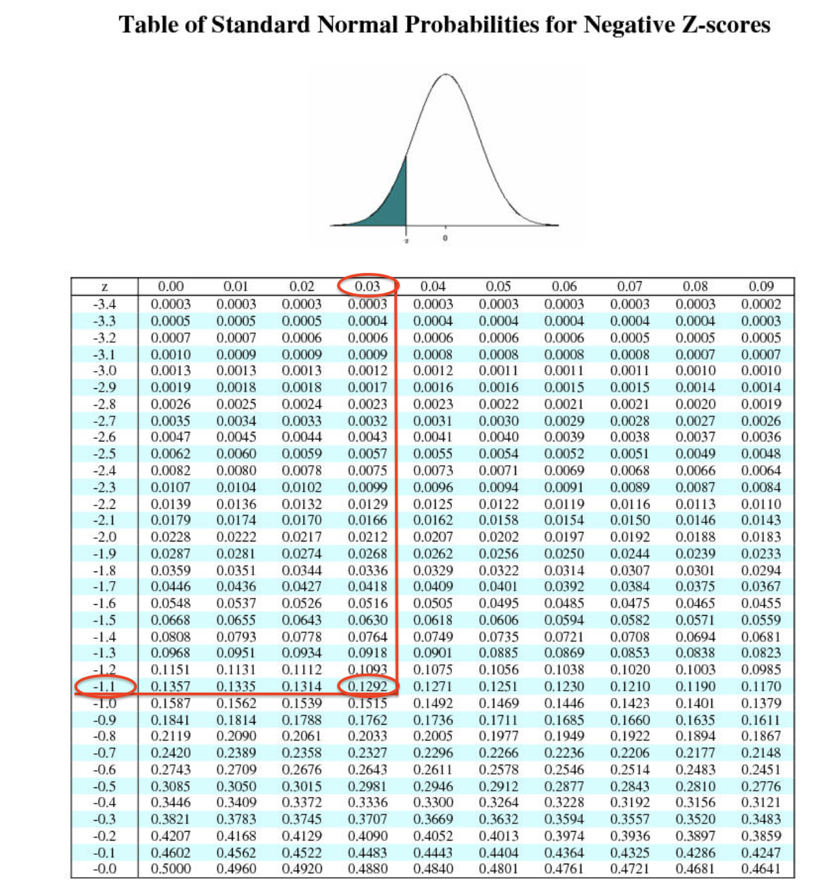

Main Questions
Our main questions:
- How have youth disconnection rates in American youth changed since 2008?
- In particular, how has this changed for different gender and ethnic groups? Are any groups particularly disconnected?
Disclaimer: The purpose of the Open Case Studies project is to demonstrate the use of various data science methods, tools, and software in the context of messy, real-world data. A given case study does not cover all aspects of the research process, is not claiming to be the most appropriate way to analyze a given data set, and should not be used in the context of making policy decisions without external consultation from scientific experts.
This work is licensed under the Creative Commons Attribution-NonCommercial 3.0 (CC BY-NC 3.0) United States License.
To cite this case study please use:
Wright, Carrie, and Ontiveros, Michael and Jager, Leah and Taub, Margaret and Hicks, Stephanie. (2020). https://github.com/opencasestudies/ocs-youth-disconnection-case-study. Disparities in Youth Disconnection (Version v1.0.0).
According to this report youth disconnection although generally showing decreasing trends for the past 7 years, shows racial and ethnic disparities, where some groups are showing increased rates of disconnection.
So what does the term “youth disconnection” mean?
According to Measure of America (a nonpartisan project of the nonprofit Social Science Research Council that is focused on opportunity in the United States) disconnected youth are:
“young people between the ages of 16 and 24 who are neither working nor in school”
They state that such disconnection hinders these individuals to aquire skills and create relationships necessary to have a sucessful adulthood.
They state that:
“people who experience a period of disconnection as young adults go on to earn less and are less likely to be employed, own a home, or report good health by the time they reach their thirties”
Disconnected youth are also referred to as opportunity youth, which has the added positive connotation that promoting such individuals can be beneficial not only for these individuals but also for their communties and for society.
We will expand beyond the Measure of America annual report to take a deeper look at differences of specific groups of youths. Identifying youths particularly at risk or disconnected, can help inform the design of targeted prevention and rengagement strategies.
This case study is motivated by this article:
Mendelson, T., Mmari, K., Blum, R. W., Catalano, R. F. & Brindis, C. D. Opportunity Youth: Insights and Opportunities for a Public Health Approach to Reengage Disconnected Teenagers and Young Adults. Public Health Rep 133, 54S-64S (2018).
This article describes strategies for prevention of disconnection and reengagement of discconnected youth and how such interventions could greatly positively impact opportunity youth for the entire trajectory of their lives and for future generations. It also points out that indeed their are disparities among different racial/ethnic groups.
Our main questions:
In this case study, we will demonstrate how to import and wrangle data available in the Portable Document Format (PDF). We will especially focus on using packages and functions from the Tidyverse, such as dplyr, ggplot2. The tidyverse is a library of packages created by RStudio. While some students may be familiar with previous R programming packages, these packages make data science in R more legible and intuitive.
The skills, methods, and concepts that students will be familiar with by the end of this case study are:
Data science skills:
magick packagedplyr for data wranglingtidyr)dplyrggplot2 that are in a similar style to an existing imageStatistical concepts and methods:

We will begin by loading the packages that we will need:
library(here)
library(tidyverse)
library(dplyr)
library(tidyr)
library(magrittr)
library(pdftools)
library(magick)
library(directlabels)
library(cowplot)
library(forcats)
library(Kendall)| Package | Use |
|---|---|
| here | to easily load and save data |
| tidyverse | for data science operations |
| pdftools | to manage PDF documents |
| magick | for image processing |
| here | to easily load and save data |
| tidyverse | for data science operations |
| pdftools | to manage PDF documents |
| magick | for image processing |
The first time we use a function, we will use the :: to indicate which package we are using. Unless we have overlapping function names, this is not necessary, but we will include it here to be informative about where the functions we will use come from.
So how does youth disconnection happen and what impact does it have?
There are many known risk factors, which have been identified in a variety of contexts (from family, friends, school, community, society) including:
These risk factors make it more likely for young people to miss out on education, training, and networking that can act as a foundation for a sucessful career.
There are also many known negative consequences associated with youth disconnection including but not limited to:
 Photo by Jon Tyson on Unsplash
Photo by Jon Tyson on Unsplash
Furthermore, in 2012 it was estimated that each disconnected youth costs taxpayers $250000 during a life time due to lost tax revenue and costs for social sercices, heath care and criminal justice.
Youth disconnection can be described as a continuum, as some youths will be disconnected for a brief time, while others are chronically disconnected. Additionally, while an individual who is out of school and work and also has poor support from the realtionships of others may be further disconnected than an individual who has social support.
Here is an illustration of risk factors, protective factors and the continuum of disconnection:
##### [source]
Many programs have identified useful strategies in rengaging disconnected youth or preventing discconection of youth.
generally speaking, most programs focus on reengagement strategies, however, prevention strategies are likely to be just as important.
Reserach suggests that active involvement with at risk youth from infancy and across multiple developmental stages through young adulthood whould be the most beneficial.
In fact, the quality of parental caregiving of infants age 6-24 months has actually been shown to be a predictor of high school dropout rates! Thus early interventions may be very important and consistent continual engagement may prevent further disconnection of youths.
Prevention strategies include:
See here and here for listings of programs dedicated to rengaging disconnected youth or preventing disconnection.
See here and here for particular examples.
The statistics used in this section came from this article.
There are some important considerations regarding this data analysis to keep in mind:
This data used in the Measure of America project reports from the is derived from American Community Survey(ASC) which excludes or underrepresents certain opportunity youth groups, such as youths in the juvenile justice system, youths in the foster care system, and homeless youths as the survey is conducted on households. Furthermore, youths who may be more disconnected for other reasons besides not being in work or school, such as dealing with the added challenge of being a teenage mother, or being abused is not available in this dataset. Thus, this data likely underestimates youth disconnection rates.
Data about certain group intersections (meaning for example individuals of a particular gender and ethnicity) or particular groups in general such as specific ethnicities or gender or sexual identity groups such as LGBT (lesbian/gay/bisexual/transgender/queer and questioning) or nonbinary gender populations is unfortunately not available in the data used in this analysis and in most research about this topic. Luckily however, recent years of the ACS survey has more detailed infromation about a greater number of racial and ethnic groups and racial/ethnic intersections.
The statistical procedures we are using may be overly simplistic. In all data analysis, we need to be wary about deriving meaning from the statistical procedures we use.
Using image processing tools can be very helpful. The manner in which data is obtained with image processing tools is what we would describe as a black box process, a process with known inputs and outputs but unknown mechanics. Because we are unaware of how our outputs are generated from our inputs, we need to be wary of the output. With the small output we are creating in this case study, a visual inspection should suffice.
In this case study we will be using data related to youth disconnection from the two following reports from the Measure of America project:
Measure of America is a nonpartisan project of the nonprofit Social Science Research Council founded in 2007 to create easy-to-use yet methodologically sound tools for understanding well-being and opportunity in America. Through reports, interactive apps, and custom-built dashboards, Measure of America works with partners to breathe life into numbers, using data to identify areas of highest need, pinpoint levers for change, and track progress over time.

The data used in these reports comes from the American Community Survey(ASC), which is the largest survey conducted by the United States Census Bureau. The survey started in 2005 and collects data for 3.5 million households annually. Data is collected about ancestry, citizehsip, income, employment, disability among many other aspects. See here for more detailed information about the survey.
According to Wikipedia (https://en.wikipedia.org/wiki/American_Community_Survey):
Data is collected by internet, mail, telephone interviews and in-person interviews…About 95 percent of households across all response modes ultimately respond… ACS responses are confidential… and “immune from legal process”
It is a mandatory survey, it is governed by federal laws that could impose a fine of as much as $5,000 for refusing to participate.
We are particularlly interesed in the following tables on the last page of the Measure of America 2019 report:

We are particularlly interesed in the tables on the following pages from the Measure of America 2020 report:


One way to import data from a pdf is to use the pdf_text() function of the pdftools package. The here() function of the here package can allow us to specify where the document that we want to import is located easily, starting from the directory where a .Rproj file is located. In this case, we will import the Making_the_Connection.pdf in the docs directory. Note this is the case if you pull the repository from github.
We can take a look at the output for the page with our table of interests by simpy using brackets [] around the page number. The page we are interested in (athough called 39 in the report) is the 44th page, which looks like this:
[1] "Youth Disconnection by Gender and by Race and Ethnicity\n I NDI CATOR TA BLE S\n DISCONNECTED YOUTH\nMAJOR RACIAL AND RATE (% ages 16–24) 2017 CHANGE IN RATE\nETHNIC GROUPS 2008 2010 2012 2014 2016 (%) (#) 2010–2017 (%)\nUnited States 12.6 14.7 14.1 13.2 11.7 11.5 4,501,800 -22.1\nMale 12.3 15.2 14.5 13.3 12.1 11.8 2,382,500 -22.5\nFemale 12.9 14.1 13.7 13.0 11.2 11.1 2,119,400 -21.7\nASIAN 7.1 8.5 7.8 7.9 6.6 6.6 145,600 -21.7\nAsian Male 6.3 8.3 7.4 7.2 6.7 6.5 73,000 -21.4\nAsian Female 7.9 8.6 8.1 8.6 6.6 6.7 72,600 -22.0\nWHITE 9.7 11.7 11.2 10.8 9.7 9.4 1,961,700 -20.1\nWhite Male 9.5 12.3 11.5 10.8 10.0 9.6 1,031,200 -22.4\nWhite Female 10.0 11.1 10.8 10.7 9.4 9.1 930,600 -17.4\nLATINO 16.7 18.5 17.3 15.2 13.7 13.2 1,157,300 -28.7\nLatino Male 13.6 16.8 16.0 14.0 12.6 12.4 562,600 -26.0\nLatina Female 20.2 20.3 18.8 16.5 14.8 13.9 594,700 -31.5\nBLACK 20.4 22.5 22.4 20.6 17.2 17.9 999,700 -20.6\nBlack Male 23.7 26.0 25.6 23.5 20.1 20.8 591,600 -19.8\nBlack Female 17.0 19.0 19.3 17.6 14.2 14.8 408,000 -22.1\nNATIVE AMERICAN 24.4 28.8 27.0 26.3 25.8 23.9 67,700 -17.1\nNative American Male 25.0 30.9 28.0 26.9 28.1 23.3 33,200 -24.5\nNative American Female 23.9 26.7 25.9 25.6 23.4 24.5 34,500 -8.4\n 2017 2017\n ASIAN SUBGROUPS (%) (#) LATINO SUBGROUPS (%) (#)\n United States 11.5 4,501,800\n Male 11.8 2,382,500 LATINO 13.2 1,157,300\n Female 11.1 2,119,400 Latino Male 12.4 562,600\n ASIAN 6.6 145,600 Latina Female 13.9 594,700\n Asian Male 6.5 73,000 SOUTH AMERICAN 8.4 37,600\n Asian Female 6.7 72,600 South American Male 9.1 20,400\n CHINESE 4.3 23,800 South American Female 7.7 17,200\n Chinese Male 4.7 12,700 CENTRAL AMERICAN 12.0 93,100\n Chinese Female 3.9 11,100 Central American Male 9.3 37,900\n VIETNAMESE 5.5 13,500 Central American Female 15.0 55,200\n Vietnamese Male 7.5 9,300\n MEXICAN 13.3 762,400\n Vietnamese Female 3.4 4,200\n Mexican Male 12.2 358,200\nINDIAN 5.9 22,300\n Mexican Female 14.4 404,200\nIndian Male 4.1 8,000 OTHER LATINO 13.6 44,800\nIndian Female 7.8 14,300\n Other Latino Male 15.3 27,600\n PAKISTANI 6.4 4,900\n Other Latina Female 11.5 17,300\n Pakistani Male\n PUERTO RICAN, DOMINICAN, CUBAN 15.1 211,200\n Pakistani Female\n PR, DR, Cuban Female 15.7 114,500\n KOREAN 6.5 11,200\n PR, DR, Cuban Female 14.4 96,600\n Korean Male 8.0 6,900\n Korean Female 5.0 4,200\n NOTE: Blank cells indicate the estimate is unreliable\n TWO OR MORE 6.6 4,000\n Two or More Male\n Two or More Female\nFILIPINO 7.3 23,400\nFilipino Male 6.5 10,800\nFilipino Female 8.1 12,700\nHMONG 14.0 8,300\nHmong Male 18.6 5,700\nHmong Female\nMAKING THE CONNECTION | Transportation and Youth Disconnection 39\n"From the output, it’s clear that a relatively large amount of manipulation will be required to wrangle this data. If you are interested in learning more about this method, please see this case study and this case study.
While not impossible, using the pdftools package in this scenario will be a bit challenging becuase of how the multiple tables are displayed on this page.
While our output may be reproducible, this process may be too time consuming.
Fortunately, there is another way we can proceed to wrangle the data.
We will demonstrate how to produce reproducible tables with image processing software in R using a package called magick which allows for the extraction of text from images. The advantage of this option, is that we can take a screenshot of just a piece of the page to wrangle.
For demonstrative purposes, we will import two sets of data. The first set of data will be used to highlight common errors that the image processing software may produce. The second set of data will be used to demonstrate how to circumvent these errors and produce reproducible datasets efficiently.
magickWe will now import the data using the magick package which allows for the improtation of images.
First we will take a screenshot of the top part of the gender, race, and ethnicity table on the last page of the 2019 Measure of America Report. We are only interested in the percentage of disconnection across the years, so we dont need our screenshot to include the last couple of columns.
We can show what this file looks like in this rendered rmarkdown website by using the include_graphics() function of the knitr package.

Now, we will use the image_read() function of the magick package to import this image.
We can then use teh image_info() function to make sure that the import worked and to get information about the size, format and color of the image.
Major_racial_ethnic_groups <- magick::image_read(here::here("img", "Major_ethnic_groups_screenshot.png"))
magick::image_info(Major_racial_ethnic_groups)# A tibble: 1 x 7
format width height colorspace matte filesize density
<chr> <int> <int> <chr> <lgl> <int> <chr>
1 PNG 1086 867 sRGB TRUE 368488 72x72 Now let’s take a look at our image in R! Now that we have imported it to see this image, we simply need to type the name of the image.

Nice!
Let’s a couple more images just for fun. Here we will import an image directly from a URL.
ggplot2_logo <- image_read("https://d33wubrfki0l68.cloudfront.net/2c6239d311be6d037c251c71c3902792f8c4ddd2/12f67/css/images/hex/ggplot2.png")
ggplot2_logo
Now we will use the image_ocr() function of the magick package to extract the text from the OCS logo image. This function uses the tesseract package which has tools for optical character recognition (OCR), hence the ocr in the function name. This allows the function to identify text in images. These OCR tools have often been developed using machine learning in which an algorithm was trained on images with and without text to “learn” to recognize text. See here to learn more about how OCR works.
[1] "ggplot2\n"Awesome! We were able to extract text from this hex sticker!
One thing to keep in mind is that this doesn’t always work. Unusual font, angles text, or particular colors can be difficult for the OCR to recoginize.
Here is an example that does not work with the current version of magick:

[1] ""This is likely do to the background on this particular hex sticker. So sometimes this process requires a bit of trial and error.
Now let’s try extracting the text from our image files.
The first image we imported looks like this.

Now we will extract the text!
[1] "United States 12.6 14.7 14.1 13.2 11.7 11.5\nMale 12.3 15.2 14.5 13.3 12.1 11.8\nFemale 12.9 14.1 13.7 13.0 11.2 11.1\nASIAN 7.1 8.5 78 79 6.6 6.6\nAsian Male 6.3 8.3 74 7.2 6.7 6.5\nAsian Female 7.9 8.6 8.1 8.6 6.6 6.7\nWHITE 9.7 11.7 11.2 10.8 9.7 9.4\nWhite Male 9.5 12.3 11.5 10.8 10.0 9.6\nWhite Female 10.0 11.1 10.8 10.7 9.4 9.1\nLATINO 16.7 18.5 17.3 15.2 13.7 13.2\nLatino Male 13.6 16.8 16.0 14.0 12.6 12.4\nLatina Female 20.2 20.3 18.8 16.5 14.8 13.9\nBLACK 20.4 22.5 22.4 20.6 17.2 17.9\nBlack Male 23.7 26.0 25.6 23.5 20.1 20.8\nBlack Female 17.0 19.0 19.3 17.6 14.2 14.8\nNATIVE AMERICAN 24.4 28.8 27.0 26.3 25.8 23.9\nNative American Male 25.0 30.9 28.0 26.9 28.1 23.3\nNative American Female 23.9 26.7 25.9 25.6 23.4 24.5\n"This looks like it worked fairly well!
We appear to have lost the column names but the values look pretty good.
You may notice that there are lots of \n values in the text from our image. These are newline characters, which denote the end of a line of text and the start of a new line of text.
We can use the str_split() function of the stringr package to split based on the \n characters in the output. We will then unlist the output using the base R unlist() function. By base, we mean that the function it is loaded automatically in an R session. Finally we will use the as_tibble() function of the tibble package to convert the data into tibble format, which is the tidyverse version of a data frame. This will allow us to see the values in the table much better.
To do all of these sequential steps efficiently we will use a method called piping.
Click here if you are unfamiliar with piping in R, which uses this
%>% operator.
%>% pipe operator which is accessible after loading the tidyverse or several of the packages within the tidyverse like dplyr because they load the magrittr package. This allows us to perform multiple sequential steps on one data input.
major_groups <- major_groups %>%
stringr::str_split(pattern ="\n") %>%
unlist() %>%
tibble::as_tibble()# A tibble: 19 x 1
value
<chr>
1 "United States 12.6 14.7 14.1 13.2 11.7 11.5"
2 "Male 12.3 15.2 14.5 13.3 12.1 11.8"
3 "Female 12.9 14.1 13.7 13.0 11.2 11.1"
4 "ASIAN 7.1 8.5 78 79 6.6 6.6"
5 "Asian Male 6.3 8.3 74 7.2 6.7 6.5"
6 "Asian Female 7.9 8.6 8.1 8.6 6.6 6.7"
7 "WHITE 9.7 11.7 11.2 10.8 9.7 9.4"
8 "White Male 9.5 12.3 11.5 10.8 10.0 9.6"
9 "White Female 10.0 11.1 10.8 10.7 9.4 9.1"
10 "LATINO 16.7 18.5 17.3 15.2 13.7 13.2"
11 "Latino Male 13.6 16.8 16.0 14.0 12.6 12.4"
12 "Latina Female 20.2 20.3 18.8 16.5 14.8 13.9"
13 "BLACK 20.4 22.5 22.4 20.6 17.2 17.9"
14 "Black Male 23.7 26.0 25.6 23.5 20.1 20.8"
15 "Black Female 17.0 19.0 19.3 17.6 14.2 14.8"
16 "NATIVE AMERICAN 24.4 28.8 27.0 26.3 25.8 23.9"
17 "Native American Male 25.0 30.9 28.0 26.9 28.1 23.3"
18 "Native American Female 23.9 26.7 25.9 25.6 23.4 24.5"
19 "" OK, this looks pretty good!
The only issue is that some values appear to be missing a decimal point.
No worries though, we can modify the entire table in a reproducbile way to get those decimal places back. However, first we need to do some other wrangling steps first.
First, let’s spearate the first column about ethnicities with the values in the subsequent columns. We can do so using the separate() function of the tidyr pacakge based on regular expressions. Regular expressions (abbreviated regex) are notation shortcuts that describe patterns in character strings. See here for an RStudio cheetsheat about them.
We want to separate by instances where a letter is followed by a space and then a number.
We can specify any letter by using the regex [:alpha:] notation and any number by using the regex [:digit] notation. We could have listed every letter that we saw the first column ending with like so s|e|E|O|K|N but this would not be as reproducible (meaning maybe this would not work as well next year if a new group were added that ended in a different letter), and we might make a mistake. This is why the regex are so useful.
 We can indicate that we want a space by using this regex:
We can indicate that we want a space by using this regex:

Now to specify that we want to see a letter first followed by a space, followed by a digit, we need to use a look around:

We will use the “preceded by” and “followed by” look arounds. Thus (?<=[:alpha:]) stands for any letter that appears before a space \\s that is followed by any digit (?=[0-9]). Altogether the pattern we want to separate by looks like this: "(?<=[:alpha:])\\s(?=[0-9])".
Now to separate the value column into two cloumns, we can use the separate function of the tidyr pacakge to do this. This will allow us to not only split the rows by our regex expression, but also to create column names.
There are three important arguments for the seperate() function:
- col - this specifies what column you are separating
- into - this specifies the names of the new columns you are creating
- sep - this specifies what character string to look for to separate by
Thus we will separate the value column into Group and years columns.
major_groups <-major_groups %>%
tidyr::separate(col = value, into = c("Group", "Years"), sep = "(?<=[:alpha:])\\s(?=[0-9])")
major_groups# A tibble: 19 x 2
Group Years
<chr> <chr>
1 "United States" 12.6 14.7 14.1 13.2 11.7 11.5
2 "Male" 12.3 15.2 14.5 13.3 12.1 11.8
3 "Female" 12.9 14.1 13.7 13.0 11.2 11.1
4 "ASIAN" 7.1 8.5 78 79 6.6 6.6
5 "Asian Male" 6.3 8.3 74 7.2 6.7 6.5
6 "Asian Female" 7.9 8.6 8.1 8.6 6.6 6.7
7 "WHITE" 9.7 11.7 11.2 10.8 9.7 9.4
8 "White Male" 9.5 12.3 11.5 10.8 10.0 9.6
9 "White Female" 10.0 11.1 10.8 10.7 9.4 9.1
10 "LATINO" 16.7 18.5 17.3 15.2 13.7 13.2
11 "Latino Male" 13.6 16.8 16.0 14.0 12.6 12.4
12 "Latina Female" 20.2 20.3 18.8 16.5 14.8 13.9
13 "BLACK" 20.4 22.5 22.4 20.6 17.2 17.9
14 "Black Male" 23.7 26.0 25.6 23.5 20.1 20.8
15 "Black Female" 17.0 19.0 19.3 17.6 14.2 14.8
16 "NATIVE AMERICAN" 24.4 28.8 27.0 26.3 25.8 23.9
17 "Native American Male" 25.0 30.9 28.0 26.9 28.1 23.3
18 "Native American Female" 23.9 26.7 25.9 25.6 23.4 24.5
19 "" <NA> Looks good!
Let’s also get rid of the all caps for the major categories of the Group column. We can convert the words to only capitalize the first letter using the str_to_title() function of the stringr package. To specifically modify the Group column we can use the mutate function of the dplyr package.
We are also going to use a special pipe operator from the magrittr package called the compound assignment pipe-operator or sometimes the double pipe operator.
This allows us to use the major_groups as our input and reassign it at the end after all the subsequent steps have been performed, although in this case it is only one step.
# A tibble: 19 x 2
Group Years
<chr> <chr>
1 "United States" 12.6 14.7 14.1 13.2 11.7 11.5
2 "Male" 12.3 15.2 14.5 13.3 12.1 11.8
3 "Female" 12.9 14.1 13.7 13.0 11.2 11.1
4 "Asian" 7.1 8.5 78 79 6.6 6.6
5 "Asian Male" 6.3 8.3 74 7.2 6.7 6.5
6 "Asian Female" 7.9 8.6 8.1 8.6 6.6 6.7
7 "White" 9.7 11.7 11.2 10.8 9.7 9.4
8 "White Male" 9.5 12.3 11.5 10.8 10.0 9.6
9 "White Female" 10.0 11.1 10.8 10.7 9.4 9.1
10 "Latino" 16.7 18.5 17.3 15.2 13.7 13.2
11 "Latino Male" 13.6 16.8 16.0 14.0 12.6 12.4
12 "Latina Female" 20.2 20.3 18.8 16.5 14.8 13.9
13 "Black" 20.4 22.5 22.4 20.6 17.2 17.9
14 "Black Male" 23.7 26.0 25.6 23.5 20.1 20.8
15 "Black Female" 17.0 19.0 19.3 17.6 14.2 14.8
16 "Native American" 24.4 28.8 27.0 26.3 25.8 23.9
17 "Native American Male" 25.0 30.9 28.0 26.9 28.1 23.3
18 "Native American Female" 23.9 26.7 25.9 25.6 23.4 24.5
19 "" <NA> Nice! That looks better.
For the year data we would like to try splitting the strings for each row into different columns based on a space. Currently all the data is listed in one column called Years.
We can use the separate function of the tidyr pacakge again to do this. This will allow us to split the rows by spaces, as well as provide names for the new columns.
major_groups %<>%
tidyr::separate(col = Years,
into = c("2008", "2010",
"2012", "2014",
"2016", "2017"),
sep = " ")
major_groups# A tibble: 19 x 7
Group `2008` `2010` `2012` `2014` `2016` `2017`
<chr> <chr> <chr> <chr> <chr> <chr> <chr>
1 "United States" 12.6 14.7 14.1 13.2 11.7 11.5
2 "Male" 12.3 15.2 14.5 13.3 12.1 11.8
3 "Female" 12.9 14.1 13.7 13.0 11.2 11.1
4 "Asian" 7.1 8.5 78 79 6.6 6.6
5 "Asian Male" 6.3 8.3 74 7.2 6.7 6.5
6 "Asian Female" 7.9 8.6 8.1 8.6 6.6 6.7
7 "White" 9.7 11.7 11.2 10.8 9.7 9.4
8 "White Male" 9.5 12.3 11.5 10.8 10.0 9.6
9 "White Female" 10.0 11.1 10.8 10.7 9.4 9.1
10 "Latino" 16.7 18.5 17.3 15.2 13.7 13.2
11 "Latino Male" 13.6 16.8 16.0 14.0 12.6 12.4
12 "Latina Female" 20.2 20.3 18.8 16.5 14.8 13.9
13 "Black" 20.4 22.5 22.4 20.6 17.2 17.9
14 "Black Male" 23.7 26.0 25.6 23.5 20.1 20.8
15 "Black Female" 17.0 19.0 19.3 17.6 14.2 14.8
16 "Native American" 24.4 28.8 27.0 26.3 25.8 23.9
17 "Native American Male" 25.0 30.9 28.0 26.9 28.1 23.3
18 "Native American Female" 23.9 26.7 25.9 25.6 23.4 24.5
19 "" <NA> <NA> <NA> <NA> <NA> <NA> Looks pretty good!
We appear to have an empty row at the very end. Since all the values are NA, we can use the drop_na() function of the tidyr package to remove it.
# A tibble: 18 x 7
Group `2008` `2010` `2012` `2014` `2016` `2017`
<chr> <chr> <chr> <chr> <chr> <chr> <chr>
1 United States 12.6 14.7 14.1 13.2 11.7 11.5
2 Male 12.3 15.2 14.5 13.3 12.1 11.8
3 Female 12.9 14.1 13.7 13.0 11.2 11.1
4 Asian 7.1 8.5 78 79 6.6 6.6
5 Asian Male 6.3 8.3 74 7.2 6.7 6.5
6 Asian Female 7.9 8.6 8.1 8.6 6.6 6.7
7 White 9.7 11.7 11.2 10.8 9.7 9.4
8 White Male 9.5 12.3 11.5 10.8 10.0 9.6
9 White Female 10.0 11.1 10.8 10.7 9.4 9.1
10 Latino 16.7 18.5 17.3 15.2 13.7 13.2
11 Latino Male 13.6 16.8 16.0 14.0 12.6 12.4
12 Latina Female 20.2 20.3 18.8 16.5 14.8 13.9
13 Black 20.4 22.5 22.4 20.6 17.2 17.9
14 Black Male 23.7 26.0 25.6 23.5 20.1 20.8
15 Black Female 17.0 19.0 19.3 17.6 14.2 14.8
16 Native American 24.4 28.8 27.0 26.3 25.8 23.9
17 Native American Male 25.0 30.9 28.0 26.9 28.1 23.3
18 Native American Female 23.9 26.7 25.9 25.6 23.4 24.5 Great, now we have 18 rows.
It’s important to look very carefully at the text. Again, there are some values missing a decimal place. For example the row where the Group vlaue is Asian, the third and fourth values are missing a decimal place.
Looking at the orginal table we see that even values like 10 are represented as 10.0.
So, to fix this we will remove all decimals (which is sort of like multiplying all values that do have a decimal by 10) and then we will multiply all values by .01 to add the decimals back. We will use the mutate() function combined with the across() function which allows us to specify which columns we want to perform a function on. We want to do this to all the year columns, so we can exclude the Group column by using a minus sign - in the .cols argument of the across() function like so: mutate(across(.cols = -Group))
Finally, we will use the str_remove() function of the stringr package to find instances of “.” and remove them. Since “.” is a regex, and indicates any character string, thus we need “\” to have R interpret a decimal or a period instead, as we can see from the RStudio cheetsheat:

To pass the data from all the coulumns except our Group variable into our str_remove() function, we need to use the . notation as a replacement for the data that we specified by the .colsargument and we need to use ~ in front of the function name.
major_groups %<>%
mutate(across(.cols = -Group, ~str_remove(string = .,
pattern = "\\.")))
major_groups# A tibble: 18 x 7
Group `2008` `2010` `2012` `2014` `2016` `2017`
<chr> <chr> <chr> <chr> <chr> <chr> <chr>
1 United States 126 147 141 132 117 115
2 Male 123 152 145 133 121 118
3 Female 129 141 137 130 112 111
4 Asian 71 85 78 79 66 66
5 Asian Male 63 83 74 72 67 65
6 Asian Female 79 86 81 86 66 67
7 White 97 117 112 108 97 94
8 White Male 95 123 115 108 100 96
9 White Female 100 111 108 107 94 91
10 Latino 167 185 173 152 137 132
11 Latino Male 136 168 160 140 126 124
12 Latina Female 202 203 188 165 148 139
13 Black 204 225 224 206 172 179
14 Black Male 237 260 256 235 201 208
15 Black Female 170 190 193 176 142 148
16 Native American 244 288 270 263 258 239
17 Native American Male 250 309 280 269 281 233
18 Native American Female 239 267 259 256 234 245 Great, now in order to multiply each value by 0.1 we need to first make the values numeric. Currently we can tell that they are character strings based on the <char> values listed under each column name.
Click here for an explanation about data types in R and about character strings.
There are several classes of data in R programming. Character is one of these classes. A character string is an individual data value made up of characters. This can be a paragraph, like the legend for the table, or it can be a single letter or number like the letter "a" or the number "3". If data are of class character, than the numeric values will not be processed like a numeric value in a mathematical sense. If you want your numeric values to be interpreted that way, they need to be converted to a numeric class. The options typically used are integer (which has no decimal place) and double precision (which has a decimal place).
To convert our values to be numeric we can use the base as.numeric() function. Again we will use mutate() and across(). Since this function doesn’t require any arguments, we don’t need to specify it’s input like we just did for the str_remove() but we could do so as shown below.
major_groups %<>%
mutate(across(.cols = -Group, as.numeric))
#this is equivalent:
#major_groups %<>%
# mutate(across(.cols = -Group, ~as.numeric(.)))
major_groups# A tibble: 18 x 7
Group `2008` `2010` `2012` `2014` `2016` `2017`
<chr> <dbl> <dbl> <dbl> <dbl> <dbl> <dbl>
1 United States 126 147 141 132 117 115
2 Male 123 152 145 133 121 118
3 Female 129 141 137 130 112 111
4 Asian 71 85 78 79 66 66
5 Asian Male 63 83 74 72 67 65
6 Asian Female 79 86 81 86 66 67
7 White 97 117 112 108 97 94
8 White Male 95 123 115 108 100 96
9 White Female 100 111 108 107 94 91
10 Latino 167 185 173 152 137 132
11 Latino Male 136 168 160 140 126 124
12 Latina Female 202 203 188 165 148 139
13 Black 204 225 224 206 172 179
14 Black Male 237 260 256 235 201 208
15 Black Female 170 190 193 176 142 148
16 Native American 244 288 270 263 258 239
17 Native American Male 250 309 280 269 281 233
18 Native American Female 239 267 259 256 234 245Great, we can see that the year variables are now numeric as they are now type double as indicated by the <dbl> below each column name. See the above section about data types if you are unfamiliar with type double.
OK, now we can multiply each value by 0.1 to add our decimal points back and get back to the orginal values.
# A tibble: 18 x 7
Group `2008` `2010` `2012` `2014` `2016` `2017`
<chr> <dbl> <dbl> <dbl> <dbl> <dbl> <dbl>
1 United States 12.6 14.7 14.1 13.2 11.7 11.5
2 Male 12.3 15.2 14.5 13.3 12.1 11.8
3 Female 12.9 14.1 13.7 13 11.2 11.1
4 Asian 7.1 8.5 7.8 7.9 6.6 6.6
5 Asian Male 6.3 8.3 7.4 7.2 6.7 6.5
6 Asian Female 7.9 8.6 8.1 8.6 6.6 6.7
7 White 9.7 11.7 11.2 10.8 9.7 9.4
8 White Male 9.5 12.3 11.5 10.8 10 9.6
9 White Female 10 11.1 10.8 10.7 9.4 9.1
10 Latino 16.7 18.5 17.3 15.2 13.7 13.2
11 Latino Male 13.6 16.8 16 14 12.6 12.4
12 Latina Female 20.2 20.3 18.8 16.5 14.8 13.9
13 Black 20.4 22.5 22.4 20.6 17.2 17.9
14 Black Male 23.7 26 25.6 23.5 20.1 20.8
15 Black Female 17 19 19.3 17.6 14.2 14.8
16 Native American 24.4 28.8 27 26.3 25.8 23.9
17 Native American Male 25 30.9 28 26.9 28.1 23.3
18 Native American Female 23.9 26.7 25.9 25.6 23.4 24.5Now is a good time to double check that our table looks like what we expect.

Looks good!
We also want to add a couple of variables about Race_Ethnicity and Gender so that we can select across groups later. We can use the recode() function of the dplyr package to change specific values, as we create a new Race_Ethnicity variable from the Group variable. For the Data for all of the US we want the Race_Ethnicity variable values to be "All_races".
major_groups %<>%
mutate(Race_Ethnicity =
recode(Group, "United States" = "All_races",
"Female" = "All_races",
"Male" = "All_races"))
head(major_groups)# A tibble: 6 x 8
Group `2008` `2010` `2012` `2014` `2016` `2017` Race_Ethnicity
<chr> <dbl> <dbl> <dbl> <dbl> <dbl> <dbl> <chr>
1 United States 12.6 14.7 14.1 13.2 11.7 11.5 All_races
2 Male 12.3 15.2 14.5 13.3 12.1 11.8 All_races
3 Female 12.9 14.1 13.7 13 11.2 11.1 All_races
4 Asian 7.1 8.5 7.8 7.9 6.6 6.6 Asian
5 Asian Male 6.3 8.3 7.4 7.2 6.7 6.5 Asian Male
6 Asian Female 7.9 8.6 8.1 8.6 6.6 6.7 Asian Female We also want to remove Male and Female from this “Race_Ethnicity” variable, We can do so using the str_remove() function of the stringr package. Importantly, we are also removing the space beore “Female” and "Male.
major_groups %<>%
mutate(Race_Ethnicity = str_remove(string = Race_Ethnicity,
pattern = " Female| Male"))
head(major_groups)# A tibble: 6 x 8
Group `2008` `2010` `2012` `2014` `2016` `2017` Race_Ethnicity
<chr> <dbl> <dbl> <dbl> <dbl> <dbl> <dbl> <chr>
1 United States 12.6 14.7 14.1 13.2 11.7 11.5 All_races
2 Male 12.3 15.2 14.5 13.3 12.1 11.8 All_races
3 Female 12.9 14.1 13.7 13 11.2 11.1 All_races
4 Asian 7.1 8.5 7.8 7.9 6.6 6.6 Asian
5 Asian Male 6.3 8.3 7.4 7.2 6.7 6.5 Asian
6 Asian Female 7.9 8.6 8.1 8.6 6.6 6.7 Asian For the new Gender variable we would like to extract just the “Female” and “Male” text from the Group variable. The str_extract() function of the stringr package will do this, and it will give us an NA value for any rows whhere “Female” or “Male” were not present. We can then replace the NA values with the text “All” to represent the total value for both male and female using the replace_na() function of the tidyr() package.
major_groups %<>%
mutate(Gender = str_extract(string = Group,
pattern = "Female|Male")) %>%
mutate(Gender = replace_na(Gender, replace = "All"))
head(major_groups)# A tibble: 6 x 9
Group `2008` `2010` `2012` `2014` `2016` `2017` Race_Ethnicity Gender
<chr> <dbl> <dbl> <dbl> <dbl> <dbl> <dbl> <chr> <chr>
1 United States 12.6 14.7 14.1 13.2 11.7 11.5 All_races All
2 Male 12.3 15.2 14.5 13.3 12.1 11.8 All_races Male
3 Female 12.9 14.1 13.7 13 11.2 11.1 All_races Female
4 Asian 7.1 8.5 7.8 7.9 6.6 6.6 Asian All
5 Asian Male 6.3 8.3 7.4 7.2 6.7 6.5 Asian Male
6 Asian Female 7.9 8.6 8.1 8.6 6.6 6.7 Asian FemaleWe would also like to replace Latino and Latina with Latinx. We can use another string_r function for this. This function, str_replace() allows us to remove and replace a particular pattern.
Question Opportunity
Why is the str_replace() function in this case a better option than using the recode() function?
# A tibble: 18 x 9
Group `2008` `2010` `2012` `2014` `2016` `2017` Race_Ethnicity Gender
<chr> <dbl> <dbl> <dbl> <dbl> <dbl> <dbl> <chr> <chr>
1 United States 12.6 14.7 14.1 13.2 11.7 11.5 All_races All
2 Male 12.3 15.2 14.5 13.3 12.1 11.8 All_races Male
3 Female 12.9 14.1 13.7 13 11.2 11.1 All_races Female
4 Asian 7.1 8.5 7.8 7.9 6.6 6.6 Asian All
5 Asian Male 6.3 8.3 7.4 7.2 6.7 6.5 Asian Male
6 Asian Female 7.9 8.6 8.1 8.6 6.6 6.7 Asian Female
7 White 9.7 11.7 11.2 10.8 9.7 9.4 White All
8 White Male 9.5 12.3 11.5 10.8 10 9.6 White Male
9 White Female 10 11.1 10.8 10.7 9.4 9.1 White Female
10 Latinx 16.7 18.5 17.3 15.2 13.7 13.2 Latinx All
11 Latinx Male 13.6 16.8 16 14 12.6 12.4 Latinx Male
12 Latinx Female 20.2 20.3 18.8 16.5 14.8 13.9 Latinx Female
13 Black 20.4 22.5 22.4 20.6 17.2 17.9 Black All
14 Black Male 23.7 26 25.6 23.5 20.1 20.8 Black Male
15 Black Female 17 19 19.3 17.6 14.2 14.8 Black Female
16 Native Ameri… 24.4 28.8 27 26.3 25.8 23.9 Native Americ… All
17 Native Ameri… 25 30.9 28 26.9 28.1 23.3 Native Americ… Male
18 Native Ameri… 23.9 26.7 25.9 25.6 23.4 24.5 Native Americ… FemaleFinally, we would like to change the shape of our table so that we have a new column that represents the year and a new column that represents the value for that year.
To do so we will be making our table “longer”, meaning that it will have fewer columns and more rows. See here for more information about different table formats, typically referred to as wide and long or sometimes narrow.
We will use the pivot_longer() function of the tidyr package to change the shape of our table.
There are 3 main arguments in this function:
cols - which specifies what columns to collapsenames_to - which specifies the name of the new column that will be created that will contain the column names of the columns you are collapsingvalues_to - which specifies the name of the new column that will be created that will contain the values from the columns you are collapsingTo specify that we want to collapse all the columns that have year values, we can chose those that contain the string "20" using the contains() function of dplyr.
major_groups_long <- major_groups %>%
tidyr::pivot_longer(cols = contains("20"),
names_to = "Year",
values_to = "Percent",
names_prefix = "Perc_") %>%
dplyr::mutate(Year = as.numeric(Year))
major_groups_long# A tibble: 108 x 5
Group Race_Ethnicity Gender Year Percent
<chr> <chr> <chr> <dbl> <dbl>
1 United States All_races All 2008 12.6
2 United States All_races All 2010 14.7
3 United States All_races All 2012 14.1
4 United States All_races All 2014 13.2
5 United States All_races All 2016 11.7
6 United States All_races All 2017 11.5
7 Male All_races Male 2008 12.3
8 Male All_races Male 2010 15.2
9 Male All_races Male 2012 14.5
10 Male All_races Male 2014 13.3
# … with 98 more rowsExcellent, now we need to do the same for the other two tables on this page:
Now let’s do the same for the Asian subgroups table.
First we will start by importing a screenshot for this table without the header, as we did before. The name of the file for the screenshot is asian_subgroups.png and it is located in the img directory.
Question Opportunity
Can you recall the command to import an image into R using the magick package?
Click here to reveal the code.

Question Opportunity
Can you recall the command to extract the text from an image using the magick package?
Click here to reveal the code.
[1] "United States 11.5\nMale 11.8\nFemale 11.1\nASIAN 6.8\nAsian Male 65\nAsian Female 67\nCHINESE 43\nChinese Male AT\nChinese Female 3.9\nVIETNAMESE 5.5\nVietnamese Male 75\nVietnamese Female 3.4\nINDIAN 5.9\nIndian Male 4.1\nIndian Female 78\nPAKISTANI 64\nPakistani Male\n\nPakistani Female\n\nKOREAN 65\nKorean Male 8.0\nKorean Female 5.0\nTWO OR MORE 68\nTwo or More Male\n\nTwo or More Female\nFILIPINO. S™S™~SS\nFilipino Male 65\nFilipino Female 81\nHMONG 14.0\nHmong Male 18.6\n"Now we again want to split the data into rows based on the newline regex. This is something we will continue to do for all the tables.
One option is to copy and paste code we wrote above each time. However, this is not very efficient and is error prone. Alternatively, we can create a R function to accomplish this succinctly. Functions allow us to perform the same process on multiple data inputs. See this other case study for more details about how to write a function.
In general, the process of writing functions involves first specifying an input that is used within the function to create an output. In this case, the data input is text which will be replaced by the actual image text that we are working on, and then used in the subsequent steps to wrangle the data. We will call our function make_rows().
Great! Now let’s apply our function to the asian_subgroups data!
# A tibble: 33 x 1
value
<chr>
1 United States 11.5
2 Male 11.8
3 Female 11.1
4 ASIAN 6.8
5 Asian Male 65
6 Asian Female 67
7 CHINESE 43
8 Chinese Male AT
9 Chinese Female 3.9
10 VIETNAMESE 5.5
# … with 23 more rowsAs you can see, there are some strange values for some of the rows. For example the row that starts with CHINESE MAle has AT percentage of disconnected youth, and the row that should say FILIPINO says S™S™~SS.
[[1]]
[1] "Chinese" "Male" "AT" [[1]]
[1] "FILIPINO." "S™S™~SS" The rows with no values are possibly causing this issue. According to the PDF, these spaces are empty to denote that the estimates were unreliable for these groups.
So we will now import and extract text from three screenshots of this table where we stop just after the row that starts with PAKISTANI in the first image, and then an image of the Korean rows up to the next row with no values, and finally an image starting at the row that starts with FILIPNO.
Asian_sub_A <- image_read(here("img", "asian_sub_A.png"))
Asian_sub_B <- image_read(here("img", "asian_sub_B.png"))
Asian_sub_C <- image_read(here("img", "asian_sub_C.png"))
Asian_sub_A


Asian_sub_A <- image_ocr(Asian_sub_A)
Asian_sub_B <- image_ocr(Asian_sub_B)
Asian_sub_C <- image_ocr(Asian_sub_C)
Asian_sub_A <- make_rows(Asian_sub_A)
Asian_sub_B <- make_rows(Asian_sub_B)
Asian_sub_C <- make_rows(Asian_sub_C)
Asian_sub_A # A tibble: 17 x 1
value
<chr>
1 "United States 11.5"
2 "Male 11.8"
3 "Female 11.1"
4 "ASIAN 6.6"
5 "Asian Male 6.5"
6 "Asian Female 6.7"
7 "CHINESE 4.3"
8 "Chinese Male 4.7"
9 "Chinese Female 3.9"
10 "VIETNAMESE 5.5"
11 "Vietnamese Male 7.5"
12 "Vietnamese Female 3.4"
13 "INDIAN 5.9"
14 "Indian Male 4.1"
15 "Indian Female 7.8"
16 "PAKISTANI 6.4"
17 "" # A tibble: 5 x 1
value
<chr>
1 "KOREAN 6.5"
2 "Korean Male 8.0"
3 "Korean Female 5.0"
4 "TWO OR MORE 6.6"
5 "" # A tibble: 6 x 1
value
<chr>
1 "FILIPINO 7.3"
2 "Filipino Male 6.5"
3 "Filipino Female 8.1"
4 "HMONG 14.0"
5 "Hmong Male 18.6"
6 "" Much better!
We can now combine the objects with the bind_rows() function of the dplyr package, which will append each of these tibbles together one after the other.
# A tibble: 28 x 1
value
<chr>
1 United States 11.5
2 Male 11.8
3 Female 11.1
4 ASIAN 6.6
5 Asian Male 6.5
6 Asian Female 6.7
7 CHINESE 4.3
8 Chinese Male 4.7
9 Chinese Female 3.9
10 VIETNAMESE 5.5
# … with 18 more rowsLooks pretty good!
Now we have similar wrangling steps to perform as we did previously and we will need to do the same for the Latinx subgroups table. So it is a good idea to make another function.
Even though we appear to have all of the decimal places for the values, we will include this in our function, just to make sure the data is correct.
Question Opportunity
Can you explain what each of the commands are doing within the function?
clean_table <- function(table){
table %>%
separate(., col = value,
into = c("Group", "Percentage"),
sep = "(?<=[:alpha:])\\s(?=[0-9])") %>%
drop_na() %>%
mutate(Group = str_to_title(Group)) %>%
mutate(Percentage = str_remove(string = Percentage,
pattern = "\\.")) %>%
separate(Percentage, c("Percent"), sep = " ") %>%
mutate(Percent = as.numeric(Percent)) %>%
mutate(Percent = Percent * 0.1) %>%
mutate(Race_Ethnicity = recode(Group,
"United States" = "All_races",
"Female" = "All_races",
"Male" = "All_races")) %>%
mutate(Race_Ethnicity =
str_remove(string = Race_Ethnicity,
pattern = " Female| Male"))%>%
mutate(Gender =
str_extract(string = Group,
pattern ="Female|Male")) %>%
mutate(Gender = replace_na(Gender, replace = "All"))
}# A tibble: 25 x 4
Group Percent Race_Ethnicity Gender
<chr> <dbl> <chr> <chr>
1 United States 11.5 All_races All
2 Male 11.8 All_races Male
3 Female 11.1 All_races Female
4 Asian 6.6 Asian All
5 Asian Male 6.5 Asian Male
6 Asian Female 6.7 Asian Female
7 Chinese 4.3 Chinese All
8 Chinese Male 4.7 Chinese Male
9 Chinese Female 3.9 Chinese Female
10 Vietnamese 5.5 Vietnamese All
# … with 15 more rowsGreat! This looks as we expected.
Question Opportunity
Why do we not need to use pivot_longer() with this data?
Recall that this is the table we want to wrangle:

Question Opportunity
Do you notice anything incorrect about this table?
Sometimes when wrangling text data, we will come across a typo. We need to determine how to respond to the typo and make note of it. It’s often best to consult a secondary source to confirm that changes made are accurate.
For the purposes of this case study, we will assume that the first of the two rows represents male disconnection rates in the Latino/a subgroup; this would be consistent with the ordering of genders in the previous subgroups.
We will make sure to correct this typo when we can.
After trial and error, two screenshots were determined best for importing this data. The names of the files for the screenshots are latinx_sub_A.png and "latinx_sub_B.png. They are located in the img directory.
Question Opportunity
Can you recall the commands to import and extract the data?
Click here to reveal the code.
latinx_imageA <- image_read(here::here("img", "latinx_sub_A.png"))
latinx_imageB <- image_read(here::here("img", "latinx_sub_B.png"))
latinx_imageC <- image_read(here::here("img", "latinx_sub_C.png"))
latinx_A <- image_ocr(latinx_imageA)
latinx_B <- image_ocr(latinx_imageB)
latinx_C <- image_ocr(latinx_imageC)
[1] "LATINO 13.2\nLatino Male 12.4\nLatina Female 13.9\n"
[1] "SOUTH AMERICAN 8.4\nSouth American Male 9.1\nSouth American Female 7.7\nCENTRAL AMERICAN 12.0\nCentral American Male 9.3\nCentral American Female 15.0\nMEXICAN 13.3\nMexican Male 12.2\nMexican Female 14.4\nOTHER LATINO 13.6\nOther Latino Male 15.3\nOther Latina Female 11.5\n"
[1] "PUERTO RICAN, DOMINICAN, CUBAN 15.1\nPR, DR, Cuban Female 15.7\nPR, DR, Cuban Female 14.4\n"We can combine the strings together using the str_c() function (wich stands for string collapse) of the stringr package.
[1] "LATINO 13.2\nLatino Male 12.4\nLatina Female 13.9\nSOUTH AMERICAN 8.4\nSouth American Male 9.1\nSouth American Female 7.7\nCENTRAL AMERICAN 12.0\nCentral American Male 9.3\nCentral American Female 15.0\nMEXICAN 13.3\nMexican Male 12.2\nMexican Female 14.4\nOTHER LATINO 13.6\nOther Latino Male 15.3\nOther Latina Female 11.5\nPUERTO RICAN, DOMINICAN, CUBAN 15.1\nPR, DR, Cuban Female 15.7\nPR, DR, Cuban Female 14.4\n"Now let’s correct that typo.
Question Opportunity
How might you do this?
Click here to reveal the code.
[1] "LATINO 13.2\nLatino Male 12.4\nLatina Female 13.9\nSOUTH AMERICAN 8.4\nSouth American Male 9.1\nSouth American Female 7.7\nCENTRAL AMERICAN 12.0\nCentral American Male 9.3\nCentral American Female 15.0\nMEXICAN 13.3\nMexican Male 12.2\nMexican Female 14.4\nOTHER LATINO 13.6\nOther Latino Male 15.3\nOther Latina Female 11.5\nPUERTO RICAN, DOMINICAN, CUBAN 15.1\nPR, DR, Cuban Male 15.7\nPR, DR, Cuban Female 14.4\n"Question Opportunity
Can you recall the commands within our make_rows() function to separate the data into rows and create a tibble?
Click here to reveal the code.
# A tibble: 19 x 1
value
<chr>
1 "LATINO 13.2"
2 "Latino Male 12.4"
3 "Latina Female 13.9"
4 "SOUTH AMERICAN 8.4"
5 "South American Male 9.1"
6 "South American Female 7.7"
7 "CENTRAL AMERICAN 12.0"
8 "Central American Male 9.3"
9 "Central American Female 15.0"
10 "MEXICAN 13.3"
11 "Mexican Male 12.2"
12 "Mexican Female 14.4"
13 "OTHER LATINO 13.6"
14 "Other Latino Male 15.3"
15 "Other Latina Female 11.5"
16 "PUERTO RICAN, DOMINICAN, CUBAN 15.1"
17 "PR, DR, Cuban Male 15.7"
18 "PR, DR, Cuban Female 14.4"
19 "" Now we can apply our function.
# A tibble: 18 x 4
Group Percent Race_Ethnicity Gender
<chr> <dbl> <chr> <chr>
1 Latino 13.2 Latino All
2 Latino Male 12.4 Latino Male
3 Latina Female 13.9 Latina Female
4 South American 8.4 South American All
5 South American Male 9.1 South American Male
6 South American Female 7.7 South American Female
7 Central American 12 Central American All
8 Central American Male 9.3 Central American Male
9 Central American Female 15 Central American Female
10 Mexican 13.3 Mexican All
11 Mexican Male 12.2 Mexican Male
12 Mexican Female 14.4 Mexican Female
13 Other Latino 13.6 Other Latino All
14 Other Latino Male 15.3 Other Latino Male
15 Other Latina Female 11.5 Other Latina Female
16 Puerto Rican, Dominican, Cuban 15.1 Puerto Rican, Dominican, Cuban All
17 Pr, Dr, Cuban Male 15.7 Pr, Dr, Cuban Male
18 Pr, Dr, Cuban Female 14.4 Pr, Dr, Cuban FemaleIt looks like we’ve succesfully corrected the typo!
Let’s also replace the abbreviations for Puerto Rican and Domincan and let’s replace Latino/Latina with Latinx.
Question Opportunity
How might you do this?
Click here to reveal the code.
# A tibble: 18 x 4
Group Percent Race_Ethnicity Gender
<chr> <dbl> <chr> <chr>
1 Latinx 13.2 Latinx All
2 Latinx Male 12.4 Latinx Male
3 Latinx Female 13.9 Latinx Female
4 South American 8.4 South American All
5 South American Male 9.1 South American Male
6 South American Female 7.7 South American Female
7 Central American 12 Central American All
8 Central American Male 9.3 Central American Male
9 Central American Female 15 Central American Female
10 Mexican 13.3 Mexican All
11 Mexican Male 12.2 Mexican Male
12 Mexican Female 14.4 Mexican Female
13 Other Latinx 13.6 Other Latinx All
14 Other Latinx Male 15.3 Other Latinx Male
15 Other Latinx Female 11.5 Other Latinx Female
16 Puerto Rican, Dominican, Cuban 15.1 Puerto Rican, Dominican, Cu… All
17 Puerto Rican, Dominican, Cuban M… 15.7 Puerto Rican, Dominican, Cu… Male
18 Puerto Rican, Dominican, Cuban F… 14.4 Puerto Rican, Dominican, Cu… FemaleGreat!
Now we are ready to look at the data from 2018 for the Asian and Latinx subgroups from the other report.
Recall that this was the page with the table of interest for the asian subgroups with 2018 data:
As you can see, the data for the subgroups is shown in the table but the overall data for Asians is located in the text.
We will use a screenshot of each to extract the data for this year.

 Trial and error indicated that again dividing the table into multiple screenshots improved the text extraction:
Trial and error indicated that again dividing the table into multiple screenshots improved the text extraction:
asian_sub_2018_A <- image_read(here::here("img", "asian_sub_2018_A.png"))
asian_sub_2018_A <- image_ocr(asian_sub_2018_A)
asian_sub_2018_B <- image_read(here::here("img", "asian_sub_2018_B.png"))
asian_sub_2018_B <- image_ocr(asian_sub_2018_B)
asian_sub_2018 <-str_c(asian_sub_2018_A, asian_sub_2018_B)# A tibble: 23 x 1
value
<chr>
1 "CHINESE : 41"
2 "Men 4.5"
3 "Women : 3.7"
4 ""
5 "INDIAN 5.4"
6 "Men 4.7"
7 "Women : 6.1"
8 ""
9 "KOREAN : 5.5"
10 "Men 5.6"
# … with 13 more rowsNow we need to modify our function a bit for this new data.
Firstly, we now have colons : in our table that we will want to separate by. Unfortunately, the text in each row isn’t extracted in the same way by the OCR.Thus some rows have only a space, while others have spaces around a colon; or for the row with VIETNAM we see a colon directly after the word followed by a space. Thus we will modify our seperate() function with this change. We can specify that the separator between any letter and any digit should be either a space (\\s) or a colon with a space before and after it (\\s:\\s) using the or (|)opperator.
So this will look like this:
asian_sub_2018 %>%
separate(., col = value,
into = c("Group", "Percent"),
sep = "(?<=[:alpha:])\\s:\\s|\\s(?=[0-9])")# A tibble: 23 x 2
Group Percent
<chr> <chr>
1 "CHINESE" 41
2 "Men" 4.5
3 "Women" 3.7
4 "" <NA>
5 "INDIAN" 5.4
6 "Men" 4.7
7 "Women" 6.1
8 "" <NA>
9 "KOREAN" 5.5
10 "Men" 5.6
# … with 13 more rowsThen because of the row with VIETNAM, we will want to remove this colon using the str_remove() function like this:
asian_sub_2018 %>%
separate(., col = value,
into = c("Group", "Percent"),
sep = "(?<=[:alpha:])\\s:\\s|\\s(?=[0-9])") %>%
mutate(Group= str_remove(string = Group, pattern = ":"))The other difference from the previous function, is that we want to fill in a new Race_Ethnicity variable with the previous rows. We can do so by first replacing “Men” or “Women” which with the or operator is (“Men|Women”), with “missing”. Then we need to convert these to NA values using the na_if() function of the dplyr package, we just need to specify what column to modify and what value to change to NA. Finally we will then repace the NA values with the previous non-NA value using the fill() function of the tidyr package. Note that this does not work inside of the mutate() function. We just need to simply specify what column to modify and then the direction to replace values. In this case we want to replace in the downward direction using the previous values.
This will look like this:
asian_sub_2018 %>%
separate(., col = value,
into = c("Group", "Percent"),
sep = "(?<=[:alpha:])\\s:\\s|\\s(?=[0-9])") %>%
mutate(Group = str_remove(string = Group, pattern = ":")) %>%
mutate(Race_Ethnicity = str_replace(string = Group,
pattern = "Men|Women",
replacement = "missing")) %>%
head()# A tibble: 6 x 3
Group Percent Race_Ethnicity
<chr> <chr> <chr>
1 "CHINESE" 41 "CHINESE"
2 "Men" 4.5 "missing"
3 "Women" 3.7 "missing"
4 "" <NA> ""
5 "INDIAN" 5.4 "INDIAN"
6 "Men" 4.7 "missing" asian_sub_2018 %>%
separate(., col = value,
into = c("Group", "Percent"),
sep = "(?<=[:alpha:])\\s:\\s|\\s(?=[0-9])") %>%
mutate(Group = str_remove(string = Group, pattern = ":")) %>%
mutate(Race_Ethnicity = str_replace(string = Group,
pattern = "Men|Women",
replacement = "missing")) %>%
mutate(Race_Ethnicity = na_if(Race_Ethnicity, "missing")) %>%
head()# A tibble: 6 x 3
Group Percent Race_Ethnicity
<chr> <chr> <chr>
1 "CHINESE" 41 "CHINESE"
2 "Men" 4.5 <NA>
3 "Women" 3.7 <NA>
4 "" <NA> ""
5 "INDIAN" 5.4 "INDIAN"
6 "Men" 4.7 <NA> asian_sub_2018 %>%
separate(., col = value,
into = c("Group", "Percent"),
sep = "(?<=[:alpha:])\\s:\\s|\\s(?=[0-9])") %>%
mutate(Group = str_remove(string = Group, pattern = ":")) %>%
mutate(Race_Ethnicity = str_replace(string = Group,
pattern = "Men|Women",
replacement = "missing")) %>%
mutate(Race_Ethnicity = na_if(Race_Ethnicity, "missing")) %>%
fill(Race_Ethnicity, .direction = "down") %>%
head()# A tibble: 6 x 3
Group Percent Race_Ethnicity
<chr> <chr> <chr>
1 "CHINESE" 41 "CHINESE"
2 "Men" 4.5 "CHINESE"
3 "Women" 3.7 "CHINESE"
4 "" <NA> ""
5 "INDIAN" 5.4 "INDIAN"
6 "Men" 4.7 "INDIAN" OK! Now, let’s combine these pieces of our new function with the old pieces:
clean_table <- function(table){
table %>%
separate(., col = value,
into = c("Group", "Percent"),
sep = "(?<=[:alpha:])\\s:\\s|\\s(?=[0-9])") %>%
mutate(Group= str_remove(string = Group,
pattern = ":")) %>%
drop_na() %>%
mutate(Group = str_to_title(string = Group)) %>%
mutate(Percent = str_remove(string = Percent,
pattern = "\\.")) %>%
mutate(Percent = as.numeric(Percent)) %>%
mutate(Percent = Percent * 0.1) %>%
mutate(Race_Ethnicity = str_replace(string = Group,
pattern = "Men|Women",
replacement = "missing")) %>%
mutate(Race_Ethnicity = na_if(Race_Ethnicity, "missing")) %>%
fill(Race_Ethnicity, .direction = "down") %>%
mutate(Gender = str_extract(string = Group,
pattern = "Men|Women")) %>%
mutate(Gender = replace_na(Gender, replace = "All"))
}# A tibble: 17 x 4
Group Percent Race_Ethnicity Gender
<chr> <dbl> <chr> <chr>
1 Chinese 4.1 Chinese All
2 Men 4.5 Chinese Men
3 Women 3.7 Chinese Women
4 Indian 5.4 Indian All
5 Men 4.7 Indian Men
6 Women 6.1 Indian Women
7 Korean 5.5 Korean All
8 Men 5.6 Korean Men
9 Women 5.4 Korean Women
10 Vietnamese 6.3 Vietnamese All
11 Men 7.6 Vietnamese Men
12 Women 5 Vietnamese Women
13 Filipino 6.8 Filipino All
14 Men 6.3 Filipino Men
15 Women 7.4 Filipino Women
16 Hmong 10.2 Hmong All
17 Cambodian 13.8 Cambodian All Looking good!
Now we just need to add the data for all Asians from the text.
We can do this using the add_row() function of the dplyr() package.
asian_sub_2018 %<>%
add_row(Group = "Asian",
Percent = 6.2,
Race_Ethnicity = "Asian",
Gender = "All") %>%
add_row(Group = "Asian",
Percent = 6.4,
Race_Ethnicity = "Asian",
Gender = "Men") %>%
add_row(Group = "Asian",
Percent = 6.1,
Race_Ethnicity = "Asian",
Gender = "Women")
asian_sub_2018# A tibble: 20 x 4
Group Percent Race_Ethnicity Gender
<chr> <dbl> <chr> <chr>
1 Chinese 4.1 Chinese All
2 Men 4.5 Chinese Men
3 Women 3.7 Chinese Women
4 Indian 5.4 Indian All
5 Men 4.7 Indian Men
6 Women 6.1 Indian Women
7 Korean 5.5 Korean All
8 Men 5.6 Korean Men
9 Women 5.4 Korean Women
10 Vietnamese 6.3 Vietnamese All
11 Men 7.6 Vietnamese Men
12 Women 5 Vietnamese Women
13 Filipino 6.8 Filipino All
14 Men 6.3 Filipino Men
15 Women 7.4 Filipino Women
16 Hmong 10.2 Hmong All
17 Cambodian 13.8 Cambodian All
18 Asian 6.2 Asian All
19 Asian 6.4 Asian Men
20 Asian 6.1 Asian Women OK, now we just want to combine the 2018 data and the 2017 data for the asian subgroups.
First let’s add a varaible for year to both. Using mutate() we can add a variable Year where all values are 2017 like so:
# A tibble: 25 x 5
Group Percent Race_Ethnicity Gender Year
<chr> <dbl> <chr> <chr> <dbl>
1 United States 11.5 All_races All 2017
2 Male 11.8 All_races Male 2017
3 Female 11.1 All_races Female 2017
4 Asian 6.6 Asian All 2017
5 Asian Male 6.5 Asian Male 2017
6 Asian Female 6.7 Asian Female 2017
7 Chinese 4.3 Chinese All 2017
8 Chinese Male 4.7 Chinese Male 2017
9 Chinese Female 3.9 Chinese Female 2017
10 Vietnamese 5.5 Vietnamese All 2017
# … with 15 more rows# A tibble: 20 x 5
Group Percent Race_Ethnicity Gender Year
<chr> <dbl> <chr> <chr> <dbl>
1 Chinese 4.1 Chinese All 2018
2 Men 4.5 Chinese Men 2018
3 Women 3.7 Chinese Women 2018
4 Indian 5.4 Indian All 2018
5 Men 4.7 Indian Men 2018
6 Women 6.1 Indian Women 2018
7 Korean 5.5 Korean All 2018
8 Men 5.6 Korean Men 2018
9 Women 5.4 Korean Women 2018
10 Vietnamese 6.3 Vietnamese All 2018
11 Men 7.6 Vietnamese Men 2018
12 Women 5 Vietnamese Women 2018
13 Filipino 6.8 Filipino All 2018
14 Men 6.3 Filipino Men 2018
15 Women 7.4 Filipino Women 2018
16 Hmong 10.2 Hmong All 2018
17 Cambodian 13.8 Cambodian All 2018
18 Asian 6.2 Asian All 2018
19 Asian 6.4 Asian Men 2018
20 Asian 6.1 Asian Women 2018You may notice that Gender is coded differently for the two years. Let’s make this consistent now:
asian_sub_2018 %<>%
mutate(across(.cols = c(Gender, Group),
~ str_replace(string = .,
pattern = "Men",
replacement = "Male")),
across(.cols = c(Gender, Group),
~ str_replace(string = .,
pattern = "Women",
replacement = "Female")))We can combine these two tibbles using the bind_rows() function of dplyr.
Notice that there are some cases where we only have one value for a praticular group. For example, there are no male or female values for the Pakistani data.
We would like to have NA values for the comprable years/genders that are possible. We can fill out the rest of the table with NA values by performing the pivot_wider() and pivot_longer() functions sequentially like so:
asian_subgroups %<>%
select(-Group) %>%
pivot_wider(names_from = Year, values_from = Percent) %>%
pivot_longer(cols = -c(Race_Ethnicity, Gender),
names_to ="Year" ,
values_to="Percent")Great, now we are ready to peform similar wrangling for the Latinx subgroups.
Recall that this was the page with the table of interest for the Latinx subgroup 2018 data:
In this case only a single image was needed:
latinx_sub_2018 <- image_read(here::here("img", "latinx_subgroups_2018.png"))
latinx_sub_2018 <- image_ocr(latinx_sub_2018)
latinx_sub_2018[1] "SOUTH :\n\nAMERICAN : 8.0\nMen 7.5\nMEXICAN 12.9\nMen 12.0\nWomen 13.8\nPR, DR, CUBAN 13.7\nMen 14.9\nWomen 12.4\nCENTRAL\n\nAMERICAN : 13.7\nMen 11.8\nWomen : 15.9\n"Let’s first combine the South and Central American labels. Notice that there are multiple new line expressions in between and we dont see repeated \n characters elsewhere. We can replace the pattern of exactly two \n (using \n{2} to specify exactly 2) or two newline regex with a space and colon in front with a single space.
latinx_sub_2018 <- str_replace_all(string = latinx_sub_2018,
pattern = "\\s:\n{2}|\n{2}", replacement = " ")
latinx_sub_2018 [1] "SOUTH AMERICAN : 8.0\nMen 7.5\nMEXICAN 12.9\nMen 12.0\nWomen 13.8\nPR, DR, CUBAN 13.7\nMen 14.9\nWomen 12.4\nCENTRAL AMERICAN : 13.7\nMen 11.8\nWomen : 15.9\n"# A tibble: 12 x 1
value
<chr>
1 "SOUTH AMERICAN : 8.0"
2 "Men 7.5"
3 "MEXICAN 12.9"
4 "Men 12.0"
5 "Women 13.8"
6 "PR, DR, CUBAN 13.7"
7 "Men 14.9"
8 "Women 12.4"
9 "CENTRAL AMERICAN : 13.7"
10 "Men 11.8"
11 "Women : 15.9"
12 "" # A tibble: 11 x 4
Group Percent Race_Ethnicity Gender
<chr> <dbl> <chr> <chr>
1 South American 8 South American All
2 Men 7.5 South American Men
3 Mexican 12.9 Mexican All
4 Men 12 Mexican Men
5 Women 13.8 Mexican Women
6 Pr, Dr, Cuban 13.7 Pr, Dr, Cuban All
7 Men 14.9 Pr, Dr, Cuban Men
8 Women 12.4 Pr, Dr, Cuban Women
9 Central American 13.7 Central American All
10 Men 11.8 Central American Men
11 Women 15.9 Central American Women Again we will replace Pr, Dr, Cuban:
latinx_sub_2018 %<>%
mutate(Group =
str_replace(string = Group,
pattern = "Pr, Dr, Cuban",
replacement = "Puerto Rican, Dominican, Cuban"),
Race_Ethnicity =
str_replace(string = Race_Ethnicity,
pattern = "Pr, Dr, Cuban",
replacement = "Puerto Rican, Dominican, Cuban"))We also want to add the total Latinx values according to the text:
Question Opportunity
Can you recall how to add additional rows?
Click here to reveal the code.
# A tibble: 6 x 4
Group Percent Race_Ethnicity Gender
<chr> <dbl> <chr> <chr>
1 Central American 13.7 Central American All
2 Men 11.8 Central American Men
3 Women 15.9 Central American Women
4 Latinx 12.8 Latinx All
5 Latinx 12.3 Latinx Men
6 Latinx 13.3 Latinx Women And now we will recode gender like before to be consistent:
latinx_sub_2018 %<>%
mutate(across(.cols = c(Gender, Group),
~ str_replace(string = .,
pattern = "Men",
replacement = "Male")),
across(.cols = c(Gender, Group),
~ str_replace(string = .,
pattern = "Women",
replacement = "Female")))
head(latinx_sub_2018)# A tibble: 6 x 4
Group Percent Race_Ethnicity Gender
<chr> <dbl> <chr> <chr>
1 South American 8 South American All
2 Male 7.5 South American Male
3 Mexican 12.9 Mexican All
4 Male 12 Mexican Male
5 Female 13.8 Mexican Female
6 Puerto Rican, Dominican, Cuban 13.7 Puerto Rican, Dominican, Cuban All Now we just need to combine all the data for the Latinx subgroups.
Again, first we will add a year variable to both the 2017 and 2018 data.
latinx_sub_2017 %<>%
mutate(Year = 2017)
latinx_sub_2018 %<>%
mutate(Year = 2018)
latinx_subgroups <- bind_rows(latinx_sub_2017, latinx_sub_2018)
latinx_subgroups# A tibble: 32 x 5
Group Percent Race_Ethnicity Gender Year
<chr> <dbl> <chr> <chr> <dbl>
1 Latinx 13.2 Latinx All 2017
2 Latinx Male 12.4 Latinx Male 2017
3 Latinx Female 13.9 Latinx Female 2017
4 South American 8.4 South American All 2017
5 South American Male 9.1 South American Male 2017
6 South American Female 7.7 South American Female 2017
7 Central American 12 Central American All 2017
8 Central American Male 9.3 Central American Male 2017
9 Central American Female 15 Central American Female 2017
10 Mexican 13.3 Mexican All 2017
# … with 22 more rowsAgain, we would like to have NA values for the comprable years/genders that are possible. We will fill out the rest of the table with NA values by performing the pivot_wider() and pivot_longer() functions sequentially like so:
OK, now let’s make sure that our notations match across our different tables. For example in the first report the terms male and female where used, but in the second report men and women were used. Let’s make sure everything is consistent now.
# A tibble: 108 x 5
Group Race_Ethnicity Gender Year Percent
<chr> <chr> <chr> <dbl> <dbl>
1 United States All_races All 2008 12.6
2 United States All_races All 2010 14.7
3 United States All_races All 2012 14.1
4 United States All_races All 2014 13.2
5 United States All_races All 2016 11.7
6 United States All_races All 2017 11.5
7 Male All_races Male 2008 12.3
8 Male All_races Male 2010 15.2
9 Male All_races Male 2012 14.5
10 Male All_races Male 2014 13.3
# … with 98 more rows# A tibble: 45 x 5
Group Percent Race_Ethnicity Gender Year
<chr> <dbl> <chr> <chr> <dbl>
1 United States 11.5 All_races All 2017
2 Male 11.8 All_races Male 2017
3 Female 11.1 All_races Female 2017
4 Asian 6.6 Asian All 2017
5 Asian Male 6.5 Asian Male 2017
6 Asian Female 6.7 Asian Female 2017
7 Chinese 4.3 Chinese All 2017
8 Chinese Male 4.7 Chinese Male 2017
9 Chinese Female 3.9 Chinese Female 2017
10 Vietnamese 5.5 Vietnamese All 2017
# … with 35 more rows# A tibble: 32 x 5
Group Percent Race_Ethnicity Gender Year
<chr> <dbl> <chr> <chr> <dbl>
1 Latinx 13.2 Latinx All 2017
2 Latinx Male 12.4 Latinx Male 2017
3 Latinx Female 13.9 Latinx Female 2017
4 South American 8.4 South American All 2017
5 South American Male 9.1 South American Male 2017
6 South American Female 7.7 South American Female 2017
7 Central American 12 Central American All 2017
8 Central American Male 9.3 Central American Male 2017
9 Central American Female 15 Central American Female 2017
10 Mexican 13.3 Mexican All 2017
# … with 22 more rowsLooks good!
Recall what our main questions were?
Our main questions:
Now that we have wrangled our data and made it easy to work with, let’s create some visualizations to explore these questions.
We are particularly interested in being able to reproduce the plot below, as we would like to make similar looking plots.
In general, it is very useful to learn how to reproduce the style of a plot.
There are color identifying websites such as this.
Using one of these websites, we identify the hex triplet code for the color used in the visualization included in the PDF : #008393. Thus we will use this color our plot.
We can create a version of the above plot using the ggplot2 package of the tidyverse to create our plots.
Click here for an introduction about this package if you are new to using
ggplot2
The ggplot2 package is generally intuitive for beginners because it is based on a grammar of graphics or the gg in ggplot2. The idea is that you can construct many sentences by learning just a few nouns, adjectives, and verbs. There are specific “words” that we will need to learn and once we do, you will be able to create (or “write”) hundreds of different plots.
The critical part to making graphics using ggplot2 is the data needs to be in a tidy format. Given that we have just spent time putting our data in tidy format, we are primed to take advantage of all that ggplot2 has to offer!
We will show how it is easy to pipe tidy data (output) as input to other functions that create plots. This all works because we are working within the tidyverse.
What is the ggplot() function? As explained by Hadley Wickham:
The grammar tells us that a statistical graphic is a mapping from data to aesthetic attributes (colour, shape, size) of geometric objects (points, lines, bars). The plot may also contain statistical transformations of the data and is drawn on a specific coordinates system.
ggplot2 Terminology:
x and y variable names)geom_point(), geom_bar(), geom_line(), geom_histogram()The function aes() is an aesthetic mapping function inside the ggplot() object. We use this function to specify plot attributes (e.g. x and y variable names) that will not change as we add more layers.
Anything that goes in the ggplot() object becomes a global setting. From there, we use the geom objects to add more layers to the base ggplot() object. These will define what we are interested in illustrating using the data.
So for this first plot we just want to recreate the plot in the PDF. Thus we will use the major_groups_long tibble and we will filter for the "All" values of the Gender package. We also want to exclude the data for the United states. We can exclude the data from the US using the not equals != opperator like so:
# A tibble: 30 x 5
Group Race_Ethnicity Gender Year Percent
<chr> <chr> <chr> <dbl> <dbl>
1 Asian Asian All 2008 7.1
2 Asian Asian All 2010 8.5
3 Asian Asian All 2012 7.8
4 Asian Asian All 2014 7.9
5 Asian Asian All 2016 6.6
6 Asian Asian All 2017 6.6
7 White White All 2008 9.7
8 White White All 2010 11.7
9 White White All 2012 11.2
10 White White All 2014 10.8
# … with 20 more rowsThe data from the tables only included up to 2017, but this will still allow us to create a similar plot.
Now we have the data ready to make the plot… but how do we actually start making the plot?
First, we start with the ggplot() function of the ggplot2 package.
This function requires that the aesthetics aes() be specified. This involves choosing what variable will be plotted on the x-axis and the y axis. It also involves choosing variables to color or group our plot by.
In our case, we want to plot the percent of disconnection on the y-axis (thus the Percent varaible of the major_groups_long data) and the Year on the x-axis. We would like to separate each racial or ethnic group to have their own points/lines. Thus we will use the color argument for this variable to do this, as we intend to color our plot something other than black.
If we run the following code, we get an empty plot.
major_groups_long %>%
filter(Gender == "All",
Group != "United States") %>%
ggplot(aes(x = Year, y = Percent, color = Race_Ethnicity))The next thing we need to do is add ggplot2 layers using the + to specify how we want the data to be displayed on our plot.
We would like both points and lines. We will use the geom_point() and geom_line() functions of the ggplot2 package to do this. Which ever layer we add first will be plotted first and therefore below the next layer. We will also specify the size of these elements using the size argument.
major_groups_long %>%
filter(Gender == "All",
Group != "United States") %>%
ggplot(aes(x = Year, y = Percent, color = Race_Ethnicity)) +
geom_line(size = 0.5) +
geom_point(size = 3) 
OK, not bad, but we have quite a bit to work on to make the style match.
First, we will update the x-axis and y-axis, to look more similar to the plot from the report. We can specify where the tick marks should be for each using breaks argument of the scale_x_continuous() and scale_y_continuous() functions (also of the ggplot2 package). These functions also allow for specification of the range or limits of the axis using the limits argument. We can use the base seq() function to create a sequence of numbers for each tick mark. We will make the x-axis upper limit a bit larger to allow for the image of the figure and the label for each group.
Next, we will change the color to match the one that we identified, by using the scale_color_manual() function of the ggplot2 package. This requires color values for each group. In our case, we have 5 groups, so we repeate this value 5 times using the base rep() function.
We will also change the overall look of the plot using the theme_classic() function. See here for a list of options.
major_groups_long %>%
filter(Gender == "All",
Group != "United States") %>%
ggplot(aes(x = Year, y = Percent, color = Race_Ethnicity)) +
geom_line( size = 0.5) +
geom_point( size = 3) +
scale_x_continuous(breaks = seq(2008,2018, by=1),
limits = c(2008,2020)) +
scale_y_continuous(breaks = seq(5,30, by =5),
limits = c(5,30)) +
theme_classic() +
scale_color_manual(values = c(rep( "#008393", 5)))
Now let’s add some labels. We can add a title using the title argument and a y-axis title using the y argument of the labs() function.
plot <-major_groups_long %>%
filter(Gender == "All",
Group != "United States") %>%
ggplot(aes(x = Year, y = Percent, color = Race_Ethnicity)) +
geom_line( size = 0.5) +
geom_point( size = 3) +
scale_x_continuous(breaks = seq(2008,2018, by=1),
limits = c(2008,2020)) +
scale_y_continuous(breaks = seq(5,30, by =5),
limits = c(5,30)) +
theme_classic() +
labs(title = "YOUTH DISCONNECTION BY RACE AND ETHNICITY, 2008 - 2017",
y = "YOUTH DISCONNECTION (%)") +
theme_classic() +
theme(title = element_text(size = 10,
color = "#008393",
face = "bold"),
axis.title.x = element_blank())+
scale_color_manual(values = c(rep( "#008393", 5)))
plot <- directlabels::direct.label(plot, list(dl.trans(x = x+1.2, y = y +0), "last.points"))
plot
Getting close!
Now we need to add figurine icons to the plot.
To add the figurines we can use icons from free resources like font awesome. See here for a link to svg options. Or we could also take a screenshot of just the figurine from the original plot. However, it is useful to know how to create similar icons if we didn’t have the orginal plot to work with.
fa_figurine <- image_read("https://upload.wikimedia.org/wikipedia/commons/7/7c/User_font_awesome.svg")
fa_figurine

fa_figurine <- image_fill(fa_figurine,
color = "#008393",
point = "+800+1000",
fuzz = 0)
fa_figurine

Now to add the image of the figurine to the plot we can use the draw_image() function of the cowplot package. We simply need to specify the name of the image, and then where we would like it to go according to the x- and y-axis and finaly the scaled size of the image. This scale argument takes a bit of trial and error.
Here we will add both images of the figurines to a couple of groups:
plot +
cowplot::draw_image(figurine, x = 2017, y = 23.5, scale = 4) +
cowplot::draw_image(fa_figurine, x = 2017, y = 17.5, scale = 2)
Nice!
Now we just need to add this for all of the groups and we also will want to replace our Native American label with a two line version so that we look as similar to the report plot as possible.
Question Opportunity
How might we change the Native American label to have two lines? (hint: think about how we separated the rows of our tables)
Click here to reveal the code.
plot <- major_groups_long %>%
filter(Gender == "All",
Group != "United States") %>%
mutate(Race_Ethnicity = str_replace(string = Race_Ethnicity,
pattern = "Native American",
replacement = "Native\nAmerican")) %>% ggplot(aes(x = Year, y = Percent, color = Race_Ethnicity)) +
geom_line( size = 0.5) +
geom_point( size = 3) +
scale_x_continuous(breaks = seq(2008,2018, by=1),
limits = c(2008,2020)) +
scale_y_continuous(breaks = seq(5,30, by =5),
limits = c(5,30)) +
theme_classic() +
labs(title = "YOUTH DISCONNECTION BY RACE AND ETHNICITY, 2008 - 2017",
y = "YOUTH DISCONNECTION (%)") +
theme_classic() +
theme(title = element_text(size = 10,
color = "#008393",
face = "bold"),
axis.title.x = element_blank())+
scale_color_manual(values = c(rep( "#008393", 5)))+
draw_image(figurine, x = 2017, y = 23.5, scale = 4) +
draw_image(figurine, x = 2017, y = 17.5, scale = 4) +
draw_image(figurine, x = 2017, y = 13.5, scale = 4) +
draw_image(figurine, x = 2017, y = 9, scale = 4) +
draw_image(figurine, x = 2017, y = 5.5, scale = 4)
plot <- directlabels::direct.label(plot, list(dl.trans(x = x+1.2, y = y +0), "last.points")) Nice! Our plot looks very similar stylistically to the plot in the report.
Nice! Our plot looks very similar stylistically to the plot in the report.
We can see from this plot that Native Americans have a very high rate of youth disconnection, with roughly still a quarter of the population experiencing youth disconnection in this survey. Altough some groups show a downward trend, like the Latinx group, the level has been fairly stable since 2008, as we see that the slope of each line is fairly flat. We will investigate this further in our analysis.
Now let’s create a similar plot for females and males. To do this we can simply use the facet_wrap() function. We need to specify what variable we want to facet by, in this case the Gender variable, by using the ~ symbol. We also want to set the scales argument to "free", so that we have a y-axis for both the female and male plots. See this case study for more information about faceting plots.
We also dont want to plot the "All" values for the Gender variable as we have already shown that in the previous plot, so we again exclude it.
Question Opportunity
How do we modify the code to not include the "All" values for the Gender variable?
Click here to reveal the code.
plot_gender <-major_groups_long %>%
filter(Race_Ethnicity != "All_races",
Gender != "All") %>%
mutate(Race_Ethnicity = str_replace(string = Race_Ethnicity,
pattern = "Native American",
replacement = "Native\nAmerican"),
Gender = str_replace(string = Gender,
pattern = "Female",
replacement = "FEMALE"),
Gender = str_replace(string = Gender,
pattern = "Male",
replacement = "MALE")) %>%
ggplot(aes(x = Year, y = Percent, color = Race_Ethnicity)) +
geom_line(size = 0.5) +
geom_point(size = 3) +
facet_wrap(~Gender, scales = "free") +
scale_x_continuous(breaks = seq(2008,2018, by=1),
limits = c(2008,2020)) +
scale_y_continuous(breaks = seq(5,30, by =5),
limits = c(5,31)) +
theme_classic() +
labs(title = "YOUTH DISCONNECTION BY GENDER AND RACIAL/ETHNIC GROUP, 2008 - 2017",
y = "YOUTH DISCONNECTION (%)") +
theme_classic() +
theme(title = element_text(size = 10,
color = "#008393",
face = "bold"),
axis.title.x = element_blank(),
axis.text.x = element_text(angle = 90),
strip.background =element_rect(fill="#003661"),
strip.text = element_text(colour = 'white', face = "bold", size = 12))+
scale_color_manual(values = c(rep( "#008393", 6)))
plot_gender <- direct.label(plot_gender, list(dl.trans(x = x+0.3, y = y +0), "last.points"))
It’s a bit difficult to tell the Black female and Latinx female lines apart.
Let’s try adding another color for every other line. Again we will use the scale_color_manual() function to specify the colors of the lines and points on the plot.
We will use black as the other color. We can use the hex triplet code or we can write out the name of the color, in this case we will write "black". To specifically color each group differently, we can write the colors in the alphabetically order of the distinct values of Race_Ethnicity. Thus the first color listed will be the color for the Asian values, while the last will be the color for the White values.
Question Opportunity
Can you explain why we didn’t use a pipe in the previous code chunk?
 Very interesting! By parsing the groups further into intersections of racial and ethnic groups with gender, we see that there are some very dramatic differences for the Black and Latinx groups. One postive thing that we cans see, is that there has been a steep decline in youth disconnection for Latinx females. Unfortunately the level of disconnection for females in 2008 was quite high, so now Latinx females have similar rates to Latinx males. In contrast, we see that Black males have had and continue to have much higher rates of disconnection than Black females. Both Black females and males show an increased rate since 2016. Native American females also show an increased rate since 2016.
Very interesting! By parsing the groups further into intersections of racial and ethnic groups with gender, we see that there are some very dramatic differences for the Black and Latinx groups. One postive thing that we cans see, is that there has been a steep decline in youth disconnection for Latinx females. Unfortunately the level of disconnection for females in 2008 was quite high, so now Latinx females have similar rates to Latinx males. In contrast, we see that Black males have had and continue to have much higher rates of disconnection than Black females. Both Black females and males show an increased rate since 2016. Native American females also show an increased rate since 2016.
It is clear from the previous plot that observing more specific subgroups in our data can be very informative!
Thus, we also want to make plots of the Asain and Latinx subgroups, to see if there are particular ethnic groups that have higher levels of youth disconnection. If so, these groups may particuarly benefit for prevention and rengagement efforts.
We will also attempt to continue to plot the genders separately, as we have learned that there may be important gender group differences among the racial and ethnic groups. However, the data is incomplete for some of the ethnic groups. Recall that we also only have two years of data for both our Asian and Latinx subgroup data. First we will start by plotting just the subgroups over the two years.
We can continue to make our plots look like they match the report by using a color palette based off the color used in the report. We can use the colorRampPalette() function of the grDevices package, which is loaded automatically in an RStudio session. We can specify that we want the colors to range from gray to the color that we have been using.
Then we just need to specify how many colors we want in our gradient when we choose to use the color pallette. Say we wanted 3 colors, we just need to type custom_pal(3) to get a list of 3 colors within the palette. Thus we will have gray, the teal color we have been using, and a shade in between.
custom_pal <- colorRampPalette(c("gray", "#008393"))
custom_pal <-custom_pal(4)
custom_pal <-c("#008393","#BEBEBE")Here we can see the hex triplet codes for gray and the shade in between.
OK, now let’s start with the Asian subgroups. Since we only have two time points of data for each group, we will create a bar graph this time where the two years are displayed next to each other for each year. Thus, we want the Year variable to be a discrete variable. To ensure that it is interpreted as a discrete variable, we need to convert it to be a character type variable rather than numeric using the base as.character() function.
First, we want to filter for the rows where the Gender variable values are All, we also do not want to include the data for the average of all races. We also
asian_subgroups %>%
filter(Gender == "All") %>%
filter(Race_Ethnicity != "All_races") %>%
mutate(Year = as.character(Year))# A tibble: 17 x 5
Group Percent Race_Ethnicity Gender Year
<chr> <dbl> <chr> <chr> <chr>
1 Asian 6.6 Asian All 2017
2 Chinese 4.3 Chinese All 2017
3 Vietnamese 5.5 Vietnamese All 2017
4 Indian 5.9 Indian All 2017
5 Pakistani 6.4 Pakistani All 2017
6 Korean 6.5 Korean All 2017
7 Two Or More 6.6 Two Or More All 2017
8 Filipino 7.3 Filipino All 2017
9 Hmong 14 Hmong All 2017
10 Chinese 4.1 Chinese All 2018
11 Indian 5.4 Indian All 2018
12 Korean 5.5 Korean All 2018
13 Vietnamese 6.3 Vietnamese All 2018
14 Filipino 6.8 Filipino All 2018
15 Hmong 10.2 Hmong All 2018
16 Cambodian 13.8 Cambodian All 2018
17 Asian 6.2 Asian All 2018 Now that we have wrangled the data we can make our plot. To make a bar plot there ae two many ggplot2 functions, geom_col() and geom_bar(). The geom_col() function plots the actual values of the data, while the geom_bar()function plots counts (however you can override this with the stat = identity argument). We are interested in plotting the actual values, so we will use the goem_col() function.
This time we will specify that the Year variable be used to specify the fill color of the bars of the bar plot by using aes(fill = Year).
We also need to indicate how the bars should be plotted based on the position argument.
The options for the position argument are: - stack - the years would be displayed on top of one another (this is default)
- dodge - the years would be displayed next to one another with no space in between
- dodge2 - the years would be displayed next to one another with a space in between
- fill - the years would be displayed on top of one other, where the heights of each color would show the relative proportions for each year adding up to 1, thus each bar would have the same height
We will use the dodge option.
For the colors, we can try out various numbers of shades for the palette till we get shades that we like. In this case, 2 shades out of a gradient of 4 shades from gray to teal looks nice,
asian_subgroups %>%
filter(Gender == "All") %>%
filter(Race_Ethnicity != "All_races") %>%
mutate(Year = as.character(Year)) %>%
ggplot(aes(x = Race_Ethnicity, y = Percent)) +
geom_col(aes(fill = Year), position = "dodge")+
labs(title = "YOUTH DISCONNECTION BY ASIAN SUBGROUP, 2017-2018",
y = "YOUTH DISCONNECTION (%)") +
scale_fill_manual(values = custom_pal) +
theme_classic() +
theme(title = element_text(size = 10,
color = "#008393",
face = "bold"),
axis.title.x = element_blank(),
axis.text.x = element_text(angle = 90, hjust = 1))
OK, this looks pretty nice! However, we can improve this a bit.
Before we do so, let’s create a theme for our future similar ggplots like so:
bar_theme <-function() {
theme_classic() +
theme(title = element_text(size = 10,
color = "#008393",
face = "bold"),
axis.title.x = element_blank(),
axis.text.x = element_text(angle = 90, hjust = 1))
}Now we simply need to type bar_theme() instead to achieve the same style for our plot.
It would be nice if for subgroups that only have one year of data, if the column that was displayed was still the same width as the that of the other groups. To do this we need a row with an NA value for the year that is missing. One way to accomplish this is to use the pivot_wider() and pivot_longer() functions to widen the data based on the Year variable and the collapse the data based on the Year variable. By widening our data, we create the NA values we want; however we need to collapse our data back to the long format so that we can easily use ggplot2 to plot the year as the fill in our bar plot.
Note that we no longer need to change the type of the Year variable, as it is automatically converted to type character.
asian_subgroups %>%
filter(Gender == "All") %>%
filter(Race_Ethnicity != "All_races") %>%
dplyr::select(-Group) %>%
pivot_wider(names_from = Year, values_from = Percent)# A tibble: 10 x 4
Race_Ethnicity Gender `2017` `2018`
<chr> <chr> <dbl> <dbl>
1 Asian All 6.6 6.2
2 Chinese All 4.3 4.1
3 Vietnamese All 5.5 6.3
4 Indian All 5.9 5.4
5 Pakistani All 6.4 NA
6 Korean All 6.5 5.5
7 Two Or More All 6.6 NA
8 Filipino All 7.3 6.8
9 Hmong All 14 10.2
10 Cambodian All NA 13.8Great! Now we have NA values. Now we just to get the data back into long format:
asian_subgroups %>%
filter(Gender == "All") %>%
filter(Race_Ethnicity != "All_races") %>%
dplyr::select(-Group) %>%
pivot_wider(names_from = Year, values_from = Percent) %>%
pivot_longer(cols = -c(Race_Ethnicity, Gender),
names_to ="Year" ,
values_to="Percent")# A tibble: 20 x 4
Race_Ethnicity Gender Year Percent
<chr> <chr> <chr> <dbl>
1 Asian All 2017 6.6
2 Asian All 2018 6.2
3 Chinese All 2017 4.3
4 Chinese All 2018 4.1
5 Vietnamese All 2017 5.5
6 Vietnamese All 2018 6.3
7 Indian All 2017 5.9
8 Indian All 2018 5.4
9 Pakistani All 2017 6.4
10 Pakistani All 2018 NA
11 Korean All 2017 6.5
12 Korean All 2018 5.5
13 Two Or More All 2017 6.6
14 Two Or More All 2018 NA
15 Filipino All 2017 7.3
16 Filipino All 2018 6.8
17 Hmong All 2017 14
18 Hmong All 2018 10.2
19 Cambodian All 2017 NA
20 Cambodian All 2018 13.8Great, now let’s see how this looks in the plot.
asian_subgroups %>%
filter(Gender == "All") %>%
filter(Race_Ethnicity != "All_races") %>%
dplyr::select(-Group) %>%
pivot_wider(names_from = Year, values_from = Percent) %>%
pivot_longer(cols = -c(Race_Ethnicity, Gender),
names_to ="Year" ,
values_to="Percent") %>%
ggplot(aes(x = Race_Ethnicity, y = Percent)) +
geom_col(aes(fill = Year), position = "dodge")+
labs(title = "YOUTH DISCONNECTION BY ASIAN SUBGROUP, 2017-2018",
y = "YOUTH DISCONNECTION (%)") +
scale_fill_manual(values = custom_pal) +
bar_theme()
Great! that is looking better! However, currently the subgroups are plotted on the x-axis by alphabetically order and we want to instead order the subgroups based on the percentage of youth disconnection. We can use the forcats package to do this.
The fct_reorder() function can be used to order the Race_Ethnicity variable based on the average of the Percent variable for the two years, while the fct_relevel() function can be used to make the Asian level appear first for comparison sake. Imporantly, we need to do this before we reshape the data, because subgroups with NA values will be placed at the end.
asian_subgroups %>%
filter(Gender == "All") %>%
filter(Race_Ethnicity != "All_races") %>%
mutate(Race_Ethnicity = fct_reorder(Race_Ethnicity, Percent)) %>%
mutate(Race_Ethnicity = fct_relevel(Race_Ethnicity, "Asian")) %>%
select(-Group) %>%
pivot_wider(names_from = Year, values_from = Percent) %>%
pivot_longer(cols = -c(Race_Ethnicity, Gender),
names_to ="Year" ,
values_to="Percent")%>%
ggplot(aes(x = Race_Ethnicity, y = Percent)) +
geom_col(aes(fill = Year), position = "dodge")+
labs(title = "YOUTH DISCONNECTION BY ASIAN SUBGROUP",
subtitle = "ORDERED BY AVERAGE DISCONNECTION LEVEL OF 2017 & 2018",
y = "YOUTH DISCONNECTION (%)") +
scale_fill_manual(values = custom_pal) + bar_theme() This is looking very good! Now, let’s make a gap between the Asian average group and the subgroups to more easily differentiate between the two and let’s use that space to add the figure legend to the plot itself.
This is looking very good! Now, let’s make a gap between the Asian average group and the subgroups to more easily differentiate between the two and let’s use that space to add the figure legend to the plot itself.
To first make a gap, we can use the scale_x_discrete() function. We need to write the name of the levels of the Race_Ethnicity variable and place a blank in between the Asian level and the subsequent levels. We can use the levels() function to make this more reproducible and to avoid mistakes instead of actually writing out each of the levels by hand.
Here you can see all the levels:
asian_subgroups %>%
dplyr::select(-Group) %>%
filter(Gender == "All") %>%
filter(Race_Ethnicity != "All_races") %>%
mutate(Race_Ethnicity = fct_reorder(Race_Ethnicity, Percent)) %>%
mutate(Race_Ethnicity = fct_relevel(Race_Ethnicity, "Asian")) %>%
pivot_wider(names_from = Year, values_from = Percent) %>%
pivot_longer(cols = -c(Race_Ethnicity, Gender),
names_to = "Year" ,
values_to = "Percent")%>%
pull(Race_Ethnicity) %>%
levels() [1] "Asian" "Chinese" "Indian" "Vietnamese" "Korean"
[6] "Pakistani" "Two Or More" "Filipino" "Hmong" "Cambodian" To simplify our code we will save our wrangled data as a tibble called asain_for_plot.
So we would like our x-axis to be like this:
scale_x_discrete(
limits = c("Asian",
"Blank",
"NEXT_blank",
levels(pull(asian_for_plot,Race_Ethnicity))[2:10]),
labels = c("Blank" = "",
"NEXT_blank"= ""))The levels(pull(asian_for_plot,Race_Ethnicity))[2:10]) code gets all 9 other levels but the Asian level of the Race_Ethnicity variable. The labels argument specifies what the x-axis should say for the spaces in between. We would like them to say nothing, so we use nothing within quotes "" as the label.
We can also use this as an opportunity to change the label on the plot for the Asian level of the Race_Ethnicity variable to be "Asian avg.". We dont wan’t to change the other subgroup level labels so we will not list anything.
We can make this more repreducible by using the length() function istead of the number 10 and replacing Asian with the first level:
scale_x_discrete(
limits = c(levels(pull(asian_for_plot,Race_Ethnicity))[1],
"Blank",
"NEXT_blank",
levels(pull(asian_for_plot,Race_Ethnicity))[2:
length(levels(pull(asian_for_plot,Race_Ethnicity)))]),
labels = c("Asian" = "Asian Avg.",
"Blank" = "",
"NEXT_blank"= ""))Then we can use legend.justification and legend.position of the theme() function to move our legend to the plot area.
According to the documentaation for the theme() function of the ggplot2 package, the legend.justification argument specifies the:
anchor point for positioning legend inside plot (“center” or two-element numeric vector) or the justification according to the plot area when positioned outside the plot
By setting the mapping for the positioning and justifacation as c(0.12,0.1) we specify that we want the legend to be 12 percent of the plot area from the y -axis and 10 percent of the plot area from the x-axis.
asian_for_plot <-asian_subgroups %>%
dplyr::select(-Group) %>%
filter(Gender == "All") %>%
filter(Race_Ethnicity != "All_races") %>%
mutate(Race_Ethnicity = fct_reorder(Race_Ethnicity, Percent)) %>%
mutate(Race_Ethnicity = fct_relevel(Race_Ethnicity, "Asian")) %>%
pivot_wider(names_from = Year, values_from = Percent) %>%
pivot_longer(cols = -c(Race_Ethnicity, Gender),
names_to = "Year" ,
values_to = "Percent")
asian_subgroup_plot <-asian_for_plot %>%
ggplot(aes(x = Race_Ethnicity, y = Percent, fill = Year)) +
geom_col(aes(fill = Year), position = "dodge")+
labs(title = "YOUTH DISCONNECTION BY ASIAN SUBGROUP AND YEAR",
subtitle = "ORDERED BY AVERAGE DISCONNECTION LEVEL OF 2017 & 2018",
y = "YOUTH DISCONNECTION (%)") +
scale_fill_manual(values = custom_pal) +
scale_x_discrete(
limits = c(levels(pull(asian_for_plot,Race_Ethnicity))[1],
"Blank",
"NEXT_blank",
levels(pull(asian_for_plot,Race_Ethnicity))[2:
length(levels(pull(asian_for_plot,Race_Ethnicity)))]),
labels = c("Asian" = "Asian Avg.",
"Blank" = "",
"NEXT_blank"= ""))+
scale_y_continuous(limits = c(0,max(pull(asian_subgroups,Percent),
na.rm = TRUE)))+
bar_theme()+
#this add the legend to the plot area!:
theme(legend.justification = c(0.12,0.1),
legend.position = c(0.12,.1))
asian_subgroup_plot
Nice! But, this is still missing something. Perhaps if we add lines that show the average dissconection rate for the US and for Asians in general, then it will make it easier to see differences in our plot.
In the previous code we saved our plot to a onject called asian_subgroup_plot.
We can modify it by adding layers to add the lines that we want.
First we want to create objects for the US average and asian average disconnection rates.
asian_total <- asian_subgroups%>%
filter(Year == 2017,
Gender == "All",
Race_Ethnicity == "Asian") %>%
mutate(Year = as.character(Year))
pull(Percent)
US_total <- asian_subgroups%>%
filter(Year == 2017,
Gender == "All",
Race_Ethnicity == "All_races") %>%
pull(Percent)
latinx_total <- latinx_subgroups %>%
filter(Year == 2017) %>%
filter(Gender == "All",
Race_Ethnicity == "Latinx") %>%
pull(Percent)First we want to create tibbles for the US Asian average disconnection rates. We want to add labels to each of these. We can use the parse = TRUE argument later with the geom_text() function of the ggplot2 package to make these labels appear as bold font as it will be evaluated as an expression istead of a simple character string.
asian_total <- asian_subgroups%>%
filter(Year == 2017,
Gender == "All",
Race_Ethnicity == "Asian") %>%
mutate(Year = as.character(Year)) %>%
mutate(label = c('bold("ASIAN 2017 AVG RATE")'))
US_total <- asian_subgroups%>%
filter(Year == 2017,
Gender == "All",
Race_Ethnicity == "All_races") %>%
mutate(Year = as.character(Year)) %>%
mutate(label = c('bold("US 2017 AVG RATE")'))
asian_total# A tibble: 1 x 6
Group Percent Race_Ethnicity Gender Year label
<chr> <dbl> <chr> <chr> <chr> <chr>
1 Asian 6.6 Asian All 2017 "bold(\"ASIAN 2017 AVG RATE\")"# A tibble: 1 x 6
Group Percent Race_Ethnicity Gender Year label
<chr> <dbl> <chr> <chr> <chr> <chr>
1 United States 11.5 All_races All 2017 "bold(\"US 2017 AVG RATE\")"Now we can use these to create labels again with the geom_text() function and lines with the geom_hline() function on our plot.
The geom_text() function requires that the x and y axis location for the text be specified, and we want this to be located near the actual percent dissoncation rate, thus we use the Percent +.5 to grab the Percent value from asian_total and add 0.5 to it to be slightly above where the line will be.
The geom_hline() function requires, just the yintercept as this function always creates a horizontal line. The linetype argument specifies what style of line we would like. See here for a list of options.
asian_subgroup_plot<- asian_subgroup_plot+
geom_text(data = asian_total,
mapping = aes(x = 2.5, y = Percent +.7, label = label),
parse = TRUE,
color = "#008393",
size = 4) +
geom_hline(aes(yintercept = pull(asian_total, Percent)), linetype = 2) +
geom_text(data = US_total,
mapping = aes(x = 2.5, y = Percent +.7, label = label),
parse = TRUE,
color = "#008393",
size = 4) +
geom_hline(aes(yintercept = pull(US_total, Percent)), linetype = 3)
asian_subgroup_plot Awesome! Now it is much easier to tell how the disconnection rates for various subgroups compare to the national average and the Asian average. From our plot, we can see that the Hmong and Cambodian subgroup rates are very high. If we only had the plot of major racial and ethnic groups to rely on, we might not realize that these two groups have such high rates.
Awesome! Now it is much easier to tell how the disconnection rates for various subgroups compare to the national average and the Asian average. From our plot, we can see that the Hmong and Cambodian subgroup rates are very high. If we only had the plot of major racial and ethnic groups to rely on, we might not realize that these two groups have such high rates.
annotate("text", label = 'bold("ASIAN 2017 AVG RATE")',
color = "#008393",
size = 3.7,
x = 2.5,
y = asian_total+.5,
parse = TRUE) +
annotate("text", label = 'bold("US 2017 AVG RATE")',
color = "#008393",
size = 4,
x = 2.5,
y = US_total +.5,
parse = TRUE)+
geom_hline(aes(yintercept = asian_total), linetype = 2) +
geom_hline(aes(yintercept = US_total), linetype = 3)Nice! This shows the importance of adding small details such as the US and Asian rate lines. This helps provide a simple yet nuanced picture of what is going on.
From the above plot, it becomes readily apparent that the Hmong and Cambodian subgroups have much higher disconnection rates than the other Asian subgroups, as well as all races/ethnicities in the US combined.
We can confirm this by revisiting the tables.
From the 2018 table, we can caluculate that the Hmong group represented 5% and the Cambodian subgroup represented 4% respectively of all Asian disconnected youth in 2017.
If we wanted to make a similar plot but without the subgroups that are missing a year we could do it like so, by adding the drop_na() function of the tidyr package to remove rows with NA values when the data is in wide form and then using the fct_drop() function of the forcats package to remove the levels of the Race_Ethnicity variable that no longer have rows in the data.
asian_for_plot <-asian_subgroups %>%
dplyr::select(-Group) %>%
filter(Gender == "All") %>%
filter(Race_Ethnicity != "All_races") %>%
mutate(Race_Ethnicity = fct_reorder(Race_Ethnicity, Percent)) %>%
mutate(Race_Ethnicity = fct_relevel(Race_Ethnicity, "Asian")) %>%
pivot_wider(names_from = Year, values_from = Percent) %>%
tidyr::drop_na() %>%
pivot_longer(cols = -c(Race_Ethnicity, Gender),
names_to = "Year" ,
values_to = "Percent")%>%
mutate(Race_Ethnicity = fct_drop(Race_Ethnicity))
asian_subgroup_plot_simp <-asian_for_plot %>%
ggplot(aes(x = Race_Ethnicity, y = Percent, fill = Year)) +
geom_col(aes(fill = Year), position = "dodge")+
labs(title = "YOUTH DISCONNECTION BY ASIAN SUBGROUP AND YEAR",
subtitle = "ORDERED BY AVERAGE DISCONNECTION LEVEL OF 2017 & 2018",
y = "YOUTH DISCONNECTION (%)") +
scale_fill_manual(values = custom_pal) +
scale_x_discrete(
limits = c(levels(pull(asian_for_plot,Race_Ethnicity))[1],
"Blank",
"NEXT_blank",
levels(pull(asian_for_plot,Race_Ethnicity))[2:
length(levels(pull(asian_for_plot,Race_Ethnicity)))]),
labels = c("Asian" = "Asian Avg.",
"Blank" = "",
"NEXT_blank"= ""))+
scale_y_continuous(limits = c(0,max(pull(asian_subgroups,Percent),
na.rm = TRUE)))+
bar_theme()+
#this add the legend to the plot area!:
theme(legend.justification = c(0.16,0.01),legend.position = c(0.16,.01))+ geom_text(data = asian_total,
mapping = aes(x = 2.5, y = Percent +.7, label = label),
parse = TRUE,
color = "#008393",
size = 4) +
geom_hline(aes(yintercept = pull(asian_total, Percent)), linetype = 2) +
geom_text(data = US_total,
mapping = aes(x = 2.5, y = Percent +.7, label = label),
parse = TRUE,
color = "#008393",
size = 4) +
geom_hline(aes(yintercept = pull(US_total, Percent)), linetype = 3)
Now let’s do the same for the Latinx subgroups.
First let’s make the small tibble of the 2017 Latinx average rate like we did for the US and for Asians to create the lines and text on our plot.
latinx_total <- latinx_subgroups%>%
filter(Year == 2017,
Gender == "All",
Race_Ethnicity == "Latinx") %>%
mutate(Year = as.character(Year)) %>%
mutate(label = c('bold("LATINX 2017 AVG RATE")'))latinx_for_plot <-latinx_subgroups %>%
dplyr::select(-Group) %>%
filter(Gender == "All") %>%
filter(Race_Ethnicity != "All_races") %>%
mutate(Race_Ethnicity = str_replace(
string = Race_Ethnicity,
pattern = "Puerto Rican, Dominican, Cuban",
replacement = "Puerto Rican,\nDominican,\nCuban")) %>%
mutate(Race_Ethnicity = fct_reorder(Race_Ethnicity, Percent)) %>%
mutate(Race_Ethnicity = fct_relevel(Race_Ethnicity, "Latinx")) %>%
pivot_wider(names_from = Year, values_from = Percent) %>%
pivot_longer(cols = -c(Race_Ethnicity, Gender),
names_to = "Year" ,
values_to = "Percent")
latinx_subgroup_plot<-latinx_for_plot %>%
ggplot(aes(x = Race_Ethnicity, y = Percent, fill = Year)) +
geom_col(aes(fill = Year), position = "dodge")+
labs(title = "YOUTH DISCONNECTION BY LATINX SUBGROUP AND YEAR",
subtitle = "ORDERED BY AVERAGE DISCONNECTION LEVEL OF 2017 & 2018",
y = "YOUTH DISCONNECTION (%)") +
scale_fill_manual(values = custom_pal) +
scale_x_discrete(
limits = c(levels(pull(latinx_for_plot,Race_Ethnicity))[1],
"Blank",
"NEXT_blank",
levels(pull(latinx_for_plot,Race_Ethnicity))[2:
length(levels(pull(latinx_for_plot,Race_Ethnicity)))]),
labels = c("Latinx" = "Latinx Avg.",
"Blank" = "",
"NEXT_blank"= ""))+
bar_theme()+
#this add the legend to the plot area!:
theme(legend.justification = c(0.23,0.1),legend.position = c(0.23,.1))+
geom_text(data = latinx_total,
mapping = aes(x = 3, y = Percent +.7, label = label),
parse = TRUE,
color = "#008393",
size = 4) +
geom_hline(aes(yintercept = pull(latinx_total, Percent)), linetype = 2) +
geom_text(data = US_total,
mapping = aes(x = 3, y = Percent +.7, label = label),
parse = TRUE,
color = "#008393",
size = 4) +
geom_hline(aes(yintercept = pull(US_total, Percent)), linetype = 3)
latinx_for_plot <-latinx_subgroups %>%
dplyr::select(-Group) %>%
filter(Gender == "All") %>%
filter(Race_Ethnicity != "All_races") %>%
mutate(Race_Ethnicity = str_replace(
string = Race_Ethnicity,
pattern = "Puerto Rican, Dominican, Cuban",
replacement = "Puerto Rican,\nDominican,\nCuban")) %>%
mutate(Race_Ethnicity = fct_reorder(Race_Ethnicity, Percent)) %>%
mutate(Race_Ethnicity = fct_relevel(Race_Ethnicity, "Latinx")) %>%
pivot_wider(names_from = Year, values_from = Percent) %>%
tidyr::drop_na() %>%
pivot_longer(cols = -c(Race_Ethnicity, Gender),
names_to = "Year" ,
values_to = "Percent")%>%
mutate(Race_Ethnicity = fct_drop(Race_Ethnicity))
latinx_subgroup_plot_simp <-latinx_for_plot %>%
ggplot(aes(x = Race_Ethnicity, y = Percent, fill = Year)) +
geom_col(aes(fill = Year), position = "dodge")+
labs(title = "YOUTH DISCONNECTION BY LATINX SUBGROUP AND YEAR",
subtitle = "ORDERED BY AVERAGE DISCONNECTION LEVEL OF 2017 & 2018",
y = "YOUTH DISCONNECTION (%)") +
scale_fill_manual(values = custom_pal) +
scale_x_discrete(
limits = c(levels(pull(latinx_for_plot,Race_Ethnicity))[1],
"Blank",
"NEXT_blank",
levels(pull(latinx_for_plot,Race_Ethnicity))[2:
length(levels(pull(latinx_for_plot,Race_Ethnicity)))]),
labels = c("Latinx" = "Latinx Avg.",
"Blank" = "",
"NEXT_blank"= ""))+
scale_y_continuous(limits = c(0,max(pull(latinx_subgroups,Percent),
na.rm = TRUE)))+
bar_theme()+
#this add the legend to the plot area!:
theme(legend.justification = c(0.23,0.01),legend.position = c(0.23,.01))+
geom_text(data = latinx_total,
mapping = aes(x = 3, y = Percent +.7, label = label),
parse = TRUE,
color = "#008393",
size = 4) +
geom_hline(aes(yintercept = pull(latinx_total, Percent)), linetype = 2) +
geom_text(data = US_total,
mapping = aes(x = 3, y = Percent +.7, label = label),
parse = TRUE,
color = "#008393",
size = 4) +
geom_hline(aes(yintercept = pull(US_total, Percent)), linetype = 3)
Now that we have made plots for the ethnic subgroups, let’s take a look at gender differences among the subgroups.
# A tibble: 1 x 6
Group Percent Race_Ethnicity Gender Year label
<chr> <dbl> <chr> <chr> <chr> <chr>
1 Asian 6.6 Asian All 2017 "bold(\"ASIAN 2017 AVG RATE\")"# A tibble: 1 x 6
Group Percent Race_Ethnicity Gender Year label
<chr> <dbl> <chr> <chr> <chr> <chr>
1 United States 11.5 All_races All 2017 "bold(\"US 2017 AVG RATE\")"# custom_pal <- colorRampPalette(c("navy", "white"))
# custom_pal(3)
#
# custom_pal <- colorRampPalette(c("lightblue", "white"))
# custom_pal(3)
gender_pal <- c("gold", "#003661")
gender_pal <- colorRampPalette(c("gray", "#003661"))
gender_pal <- c("#003661","gray")asian_for_plot <-asian_subgroups %>%
filter(Gender != "All") %>%
filter(Race_Ethnicity != "All_races") %>%
add_row(Race_Ethnicity = "Hmong",
Gender = "Female",
Year = 2017,
Percent = NA) %>%
mutate(Race_Ethnicity = fct_reorder(Race_Ethnicity, Percent)) %>%
mutate(Race_Ethnicity = fct_relevel(Race_Ethnicity, "Asian")) %>%
select(-Group) %>%
pivot_wider(names_from = Year, values_from = Percent) %>%
pivot_longer(cols = -c(Race_Ethnicity, Gender),
names_to = "Year" ,
values_to = "Percent")
asian_gender_subgroup_plot<-asian_for_plot %>%
ggplot(aes(x = Race_Ethnicity, y = Percent)) +
geom_col(aes(fill = Gender), position = "dodge")+
labs(title = "YOUTH DISCONNECTION BY ASIAN SUBGROUP AND GENDER",
subtitle = "ORDERED BY AVERAGE DISCONNECTION LEVEL OF FEMALES & MALES (2017-2018)",
y = "YOUTH DISCONNECTION (%)") +
scale_fill_manual(values =(gender_pal)) +
scale_x_discrete(
limits = c(levels(pull(asian_for_plot,Race_Ethnicity))[1],
"Blank",
"Next_Blank",
levels(pull(asian_for_plot,Race_Ethnicity))[2:
length(levels(pull(asian_for_plot,Race_Ethnicity)))]),
labels = c("Asian" = "Asian Avg.",
"Blank" = "",
"Next_Blank" = ""))+
scale_y_continuous(limits = c(0,max(pull(asian_subgroups,Percent),
na.rm = TRUE)))+
bar_theme()+
theme(legend.justification = c(0.18,0.01), legend.position = c(0.18,.01))+
geom_text(data = asian_total,
mapping = aes(x = 3, y = Percent +.7, label = label),
parse = TRUE,
color = "#008393",
size = 4) +
geom_hline(aes(yintercept = pull(asian_total, Percent)), linetype = 2) +
geom_text(data = US_total,
mapping = aes(x = 3, y = Percent +.7, label = label),
parse = TRUE,
color = "#008393",
size = 4) +
geom_hline(aes(yintercept = pull(US_total, Percent)), linetype = 3)
asian_gender_subgroup_plot
latinx_for_plot <-latinx_subgroups %>%
dplyr::select(-Group) %>%
filter(Gender != "All") %>%
filter(Race_Ethnicity != "All_races") %>%
mutate(Race_Ethnicity = str_replace(
string = Race_Ethnicity,
pattern = "Puerto Rican, Dominican, Cuban",
replacement = "Puerto Rican,\nDominican,\nCuban")) %>%
mutate(Race_Ethnicity = fct_reorder(Race_Ethnicity, Percent)) %>%
mutate(Race_Ethnicity = fct_relevel(Race_Ethnicity, "Latinx")) %>%
pivot_wider(names_from = Year, values_from = Percent) %>%
pivot_longer(cols = -c(Race_Ethnicity, Gender),
names_to = "Year" ,
values_to = "Percent")
latinx_gender_subgroup_plot<-latinx_for_plot %>%
ggplot(aes(x = Race_Ethnicity, y = Percent)) +
geom_col(aes(fill = Gender), position = "dodge")+
labs(title = "YOUTH DISCONNECTION BY LATINX SUBGROUP AND GENDER",
subtitle = "ORDERED BY AVERAGE DISCONNECTION LEVEL OF FEMALES & MALES (2017-2018)",
y = "YOUTH DISCONNECTION (%)") +
scale_fill_manual(values = gender_pal) +
scale_x_discrete(
limits = c(levels(pull(latinx_for_plot,Race_Ethnicity))[1],
"Blank",
"Next_Blank",
levels(pull(latinx_for_plot,Race_Ethnicity))[2:
length(levels(pull(latinx_for_plot,Race_Ethnicity)))]),
labels = c("Latinx" = "Latinx Avg.",
"Blank" = "",
"Next_Blank" = ""))+
scale_y_continuous(limits = c(0,max(pull(latinx_subgroups,Percent),
na.rm = TRUE)))+
bar_theme()+
theme(legend.justification = c(0.18,0.01), legend.position = c(0.18,.01))+
geom_text(data = latinx_total,
mapping = aes(x = 3, y = Percent +.7, label = label),
parse = TRUE,
color = "#008393",
size = 4) +
geom_hline(aes(yintercept = pull(latinx_total, Percent)), linetype = 2) +
geom_text(data = US_total,
mapping = aes(x = 3, y = Percent +.7, label = label),
parse = TRUE,
color = "#008393",
size = 4) +
geom_hline(aes(yintercept = pull(US_total, Percent)), linetype = 3)
latinx_gender_subgroup_plot
asian_for_plot <-asian_subgroups %>%
filter(Gender != "All") %>%
filter(Race_Ethnicity != "All_races") %>%
add_row(Race_Ethnicity = "Hmong",
Gender = "Female",
Year = 2017,
Percent = NA) %>%
mutate(Race_Ethnicity = fct_reorder(Race_Ethnicity, Percent)) %>%
mutate(Race_Ethnicity = fct_relevel(Race_Ethnicity, "Asian")) %>%
select(-Group) %>%
pivot_wider(names_from = Year, values_from = Percent) %>%
pivot_longer(cols = -c(Race_Ethnicity, Gender),
names_to = "Year" ,
values_to = "Percent")
asian_gender_subgroup_plot_facet_year<-asian_for_plot %>%
ggplot(aes(x = Race_Ethnicity, y = Percent)) +
geom_col(aes(fill = Gender), position = "dodge")+
facet_wrap(~Year, scales = "free") +
labs(title = "ASIAN SUBGROUP YOUTH DISCONNECTION BY GENDER",
subtitle = "ORDERED BY AVERAGE DISCONNECTION LEVEL OF FEMALES & MALES (, 2017-2018)",
y = "YOUTH DISCONNECTION (%)") +
scale_fill_manual(values = gender_pal) +
scale_x_discrete(
limits = c(levels(pull(asian_for_plot,Race_Ethnicity))[1],
"Blank",
levels(pull(asian_for_plot,Race_Ethnicity))[2:
length(levels(pull(asian_for_plot,Race_Ethnicity)))]),
labels = c("Asian" = "Asian Avg.",
"Blank" = ""))+
scale_y_continuous(limits = c(0,max(pull(asian_subgroups,Percent),
na.rm = TRUE)))+
bar_theme()+
geom_text(data = asian_total,
mapping = aes(x = 3.3, y = Percent +.7, label = label),
parse = TRUE,
color = "#008393",
size = 3) +
geom_hline(aes(yintercept = pull(asian_total, Percent)), linetype = 2) +
geom_text(data = US_total,
mapping = aes(x = 3, y = Percent +.7, label = label),
parse = TRUE,
color = "#008393",
size = 3) +
geom_hline(aes(yintercept = pull(US_total, Percent)), linetype = 3)
asian_for_plot <-asian_subgroups %>%
filter(Gender != "All") %>%
filter(Race_Ethnicity != "All_races") %>%
mutate(Race_Ethnicity = fct_reorder(Race_Ethnicity, Percent)) %>%
mutate(Race_Ethnicity = fct_relevel(Race_Ethnicity, "Asian")) %>%
select(-Group) %>%
pivot_wider(names_from = Year, values_from = Percent) %>%
pivot_longer(cols = -c(Race_Ethnicity, Gender),
names_to = "Year" ,
values_to = "Percent")
asian_gender_subgroup_plot_facet_sex<-asian_for_plot %>%
ggplot(aes(x = Race_Ethnicity, y = Percent, fill = Year)) +
geom_col(aes(fill = Year), position = "dodge")+
facet_wrap(~Gender, scales = "free") +
labs(title = "ASIAN SUBGROUP YOUTH DISCONNECTION BY GENDER",
subtitle = "ORDERED BY AVERAGE DISCONNECTION LEVEL OF 2017 & 2018",
y = "YOUTH DISCONNECTION (%)") +
scale_fill_manual(values = custom_pal) +
scale_x_discrete(
limits = c(levels(pull(asian_for_plot,Race_Ethnicity))[1],
"Blank",
levels(pull(asian_for_plot,Race_Ethnicity))[2:
length(levels(pull(asian_for_plot,Race_Ethnicity)))]),
labels = c("Asian" = "Asian Avg.",
"Blank" = ""))+
scale_y_continuous(limits = c(0,max(pull(asian_for_plot,Percent),
na.rm = TRUE)))+
bar_theme()+
geom_text(data = asian_total,
mapping = aes(x = 3.3, y = Percent +.7, label = label),
parse = TRUE,
color = "black",
size = 3) +
geom_hline(aes(yintercept = pull(asian_total, Percent)), linetype = 2) +
geom_text(data = US_total,
mapping = aes(x = 3, y = Percent +.7, label = label),
parse = TRUE,
color = "black",
size = 3) +
geom_hline(aes(yintercept = pull(US_total, Percent)), linetype = 3)
# A tibble: 1 x 6
Group Percent Race_Ethnicity Gender Year label
<chr> <dbl> <chr> <chr> <chr> <chr>
1 Latinx 13.2 Latinx All 2017 "bold(\"LATINX 2017 AVG RATE\")"# A tibble: 1 x 6
Group Percent Race_Ethnicity Gender Year label
<chr> <dbl> <chr> <chr> <chr> <chr>
1 United States 11.5 All_races Male 2018 "bold(\"US 2017 AVG RATE\")"latinx_for_plot <-latinx_subgroups %>%
filter(Gender != "All") %>%
filter(Race_Ethnicity != "All_races") %>%
mutate(Race_Ethnicity = str_replace(
string = Race_Ethnicity,
pattern = "Puerto Rican, Dominican, Cuban",
replacement = "Puerto Rican,\nDominican,\nCuban")) %>%
mutate(Race_Ethnicity = fct_reorder(Race_Ethnicity, Percent)) %>%
mutate(Race_Ethnicity = fct_relevel(Race_Ethnicity, "Latinx")) %>%
select(-Group) %>%
pivot_wider(names_from = Year, values_from = Percent) %>%
pivot_longer(cols = -c(Race_Ethnicity, Gender),
names_to = "Year" ,
values_to = "Percent")
latinx_gender_subgroup_plot_facet_year<-latinx_for_plot %>%
ggplot(aes(x = Race_Ethnicity, y = Percent)) +
geom_col(aes(fill = Gender), position = "dodge")+
facet_wrap(~Year, scales = "free") +
labs(title = "LATINX SUBGROUP YOUTH DISCONNECTION BY GENDER",
subtitle = "ORDERED BY AVERAGE DISCONNECTION LEVEL OF FEMALES & MALES (, 2017-2018)",
y = "YOUTH DISCONNECTION (%)") +
scale_fill_manual(values = gender_pal) +
scale_x_discrete(
limits = c(levels(pull(latinx_for_plot,Race_Ethnicity))[1],
"Blank",
levels(pull(latinx_for_plot,Race_Ethnicity))[2:
length(levels(pull(latinx_for_plot,Race_Ethnicity)))]),
labels = c("Latinx" = "Latinx Avg.",
"Blank" = ""))+
scale_y_continuous(limits = c(0,max(pull(latinx_subgroups,Percent),
na.rm = TRUE)))+
bar_theme()+
geom_text(data = latinx_total,
mapping = aes(x = 3.3, y = Percent +.7, label = label),
parse = TRUE,
color = "#008393",
size = 3) +
geom_hline(aes(yintercept = pull(latinx_total, Percent)), linetype = 2) +
geom_text(data = US_total,
mapping = aes(x = 3, y = Percent +.7, label = label),
parse = TRUE,
color = "#008393",
size = 3) +
geom_hline(aes(yintercept = pull(US_total, Percent)), linetype = 3)
latinx_for_plot <-latinx_subgroups %>%
filter(Gender != "All") %>%
filter(Race_Ethnicity != "All_races") %>%
mutate(Race_Ethnicity = str_replace(
string = Race_Ethnicity,
pattern = "Puerto Rican, Dominican, Cuban",
replacement = "Puerto Rican,\nDominican,\nCuban")) %>%
mutate(Race_Ethnicity = fct_reorder(Race_Ethnicity, Percent)) %>%
mutate(Race_Ethnicity = fct_relevel(Race_Ethnicity, "Latinx")) %>%
select(-Group) %>%
pivot_wider(names_from = Year, values_from = Percent) %>%
pivot_longer(cols = -c(Race_Ethnicity, Gender),
names_to = "Year" ,
values_to = "Percent")
latinx_gender_subgroup_plot_facet_sex<-latinx_for_plot %>%
ggplot(aes(x = Race_Ethnicity, y = Percent, fill = Year)) +
geom_col(aes(fill = Year), position = "dodge")+
facet_wrap(~Gender, scales = "free") +
labs(title = " LATINX SUBGROUP YOUTH DISCONNECTION BY GENDER",
subtitle = "ORDERED BY AVERAGE DISCONNECTION LEVEL OF 2017 & 2018",
y = "YOUTH DISCONNECTION (%)") +
scale_fill_manual(values = custom_pal) +
scale_x_discrete(
limits = c(levels(pull(latinx_for_plot,Race_Ethnicity))[1],
"Blank",
levels(pull(latinx_for_plot,Race_Ethnicity))[2:
length(levels(pull(latinx_for_plot,Race_Ethnicity)))]),
labels = c("Latinx" = "Latinx Avg.",
"Blank" = ""))+
bar_theme()+
geom_text(data = latinx_total,
mapping = aes(x = 3, y = Percent +.7, label = label),
parse = TRUE,
color = "black",
size = 3) +
geom_hline(aes(yintercept = pull(latinx_total, Percent)), linetype = 2) +
geom_text(data = US_total,
mapping = aes(x = 3, y = Percent +.7, label = label),
parse = TRUE,
color = "black",
size = 3) +
geom_hline(aes(yintercept = pull(US_total, Percent)), linetype = 3)
geom_hline(aes(yintercept = asian_total), linetype = 2) +
geom_hline(aes(yintercept = US_total), linetype = 3)
dat_text <- data.frame(
label = c( 'bold("US 2017 AVG RATE")'),
Gender = c("Female"),
Year = c("2017"))
plot <-plot + geom_text(
data = dat_text,
mapping = aes(x = 2.5, y = US_total +.7, label = label),
parse = TRUE,
color = "#008393", size = 4)
dat_text <- data.frame(
label = c( 'bold("ASIAN 2017 RATE")'),
Gender = c("Female"),
Year = c("2017"))
plot + geom_text(
data = dat_text,
mapping = aes(x = 2.5, y = asian_total +.7, label = label),
parse = TRUE,
color = "#008393", size = 4)Repeated Cross-sectional Data
We have pooled (repeated) cross-sectional data.
This is data produced from repeated measurement of a population over time.
It is often infeasible to collect data for an entire population at once. However, we can still obtain meaningful measures using a random sample of the population.
At specific time-points, data is collected from a sample of the population. The individuals in each sample are not necessarily the same individuals. This separates pooled cross-sectional data from panel data, which is longitudinal data from repeated measurement of the same people.
By sampling from a population at multiple time points, we can generate population level statistics. Although these statistics have some random error, they can provide insight into how the measure variable is changing in a population over time.
We can accomplish this by plotting the measured values over time. Sometimes, however, the trend isn’t exactly clear. Fortunately, there are statistical methods to resolve this issue.
The Mann-Kendall trend test, (which is a variation of the Kendall rank correlation coefficient), tests whether there is a monotonic association, or a relationship with consistent direction between a variable and time.
As you can see in the image below, a monotonic relationship does not need to be linear, it simply needs to show a consistent direction of change. A linear relationship on the otherhand shows consistent direction and rate of change.
 #### [source] Stephanie Glen. “Monotonic Relationship: Definition” From StatisticsHowTo.com: Elementary Statistics for the rest of us! https://www.statisticshowto.com/monotonic-relationship/
#### [source] Stephanie Glen. “Monotonic Relationship: Definition” From StatisticsHowTo.com: Elementary Statistics for the rest of us! https://www.statisticshowto.com/monotonic-relationship/
So in other words, we are interested to see if there is a consistent direction in the relationship of disconnection rates with time, as we want to know if rates have been consistently increasing or decreasing or if they have been staying roughly the same.
So agian, this test does not test if the rate of change has been consistent over time, just the direction.
Simple linear regression tests if there is a consitent change in both rate and direction in the dependent variable as a single independent variable changes. The coefficients tell us how much the dependent variable changes with one unit change of the independent variable.
The Mann-Kendall trend test is a non-parametric test, which means that it does not require as many assumptions as some parametric tests, like the simple linear regression.
The null hypothesis \(H_{0}\) of the test is that there is no monotonic trend, while the alternative hypothesis \(H_{a}\) is that there is a trend.
According to this report, the Mann-Kendall \(S\) score is calculated as follows:
The data values are evaluated as an ordered time series. Each data value is compared to all subsequent data values. The initial value of the Mann-Kendall statistic, \(S\), is assumed to be 0 (e.g., no trend). If a data value from a later time period is higher than a data value from an earlier time period, \(S\) is incremented by 1. On the other hand, if the data value from a later time period is lower than a data value sampled earlier, \(S\) is decremented by 1. The net result of all such increments and decrements yields the final value of \(S\).
\[S =\sum_{k=1}^{n-1}\sum_{j = k+1}^{n} sign(x_{j} - x_{k}) \]
where:
$ sign(x_{j}-x_{k}) = 1$ if \(x_{j}-x_{k} >0\) \(= 0\) if \(x_{j}-x_{k} = 0\) \(= -1\) if $x_{j}-x_{k} <0 $
Thus all possible cases where a value occured later in time must be compared with values that occured earlier in time, giving \(n(n – 1) / 2\) comparisons.
like so if there were three time points (n = 4):
$ S = sign(x2−x1) + sign(x3−x1) + sign(x4-x1) + sign(x3−x2) + sign(x4-x2) + sign(x4-x3)$
Which is consistent with \(4(4-1)/2 = 4(3)/2 = 12/2 = 6\) comparisons.
Then the variance of S is calculated like so:
\[ VAR(S)=\frac{1}{18}(n(n−1)(2n+5)−\sum_{p-1}^{g}t_{p}(t_{p}−1)(2t_{p}+5))\] Where: $g = $ number of tied groups $t_{p} = $ number of observations in the \(p\)th group for a given tie
Thus if there were 3 observations in our example were 35, then there would be 1 \(g\) tied group and 3 \(t_{p}\) observations.
Note that according to this source, a minimum 4 observations should be used for this test and it is recommended to have 8 or more.
Finally the test statistic \(Z_{MK}\) is calculated as follows:
if \(S > 0\) then \(Z_{MK} = \frac{S-1}{\sqrt{VAR(S)}}\) if \(S < 0\) then \(Z_{MK} = \frac{S+1}{\sqrt{VAR(S)}}\) if \(S < 0\) then \(Z_{MK} = 0\)
Recall that the youth disconnection rates for Native Americans were some of the highest in the first table we examined.

Let’s conduct a Mann-Kendall trend test for this data.
So the first value in time was (\(x1\) = timepoint 1) 24.4, then (\(x2\)) 28.8 at the next time point, then (\(x3\)) 27.0, then (\(x4\)) 26.3, then (\(x5\)) 25.8, and finally (\(x6\)) 23.9.
If we were to caclulate the Mann-Kendall statistic mannually we could do the following:
\[ S = sign(x2−x1) + sign(x3-x1) + sign(x4-x1) + sign(x5-x1) + sign(x6-x1) +\]
\[ sign(x3-x2) + sign(x4-x2) + sign(x5-x2) + sign(x6-x2) +\]
\[sign(x4-x3) + sign(x5-x3) + sign(x6-x3) +\]
\[sign(x5-x4) + sign(x6-x4) +\]
\[sign(x6-x5)\]
Thus to calculate \(S\) in R we would do the following:
x1 = 24.4
x2 = 28.8
x3 = 27
x4 = 26.3
x5 = 25.8
x6 = 23.9
sign(x2-x1) + sign(x3-x1) + sign(x4-x1) + sign(x5-x1) + sign(x6-x1) +
sign(x3-x2) + sign(x4-x2) + sign(x5-x2) + sign(x6-x2) +sign(x4-x3) + sign(x5-x3) + sign(x6-x3) +sign(x5-x4) + sign(x6-x4) +sign(x6-x5)[1] -7The result is -7.
The \(VAR(S)\) or \(\sigma^2\) would be calculated as (since we have n = 6 observations and no ties)
\[ VAR(S)=\frac{1}{18}(6(6−1)(2(6)+5)−\sum_{p-1}^{g}0(0−1)(2(0)+5))\] \[ VAR(S)=\frac{1}{18}(30)(17)−0 =1.666667(17) = 28.33333\]
Finally the \(Z_{MK}\) statistic would be calculated as (since \(S\) < 0): \(Z_{MK} = \frac{S+1}{\sqrt{VAR(S)}}\) \(Z_{MK} = \frac{-7+1}{\sqrt{28.33333}} = \frac{-6}{5.322906} = -1.127\)
We would then use this value in a \(Z\) table to determine what the p value for either a one-sided or two-sided hypothesis.
 ####[source]
Assuming we dont know what type of trend we are looking for (and thus using a two-sided hypothesis - with the \(H_{a}\) being that either a positive or negative trend exists), we can use this table to determine that the p-value is ~.125 for a one-sided hypthesis and 2 times this is ~ 0.25 for a two-sided hypothesis.
Alternatively, we can use this calculator, which gives us a more precise p-value of 0.26 for the two-sided hypothesis.
Either way our p value of ~ 0.25 suggests that we do not have a trend as our p value is much larger than 0.05.
In our case there is not enough evidence to reject the null hypothesis. Thus we conclude that there is likely no trend.
We can also accomplish this with the Kendall::MannKendall() function. The Kendall::MannKendall() accepts a vector of data for which a trend may be observed. Consulting the documentation for the Kendall::MannKendall() function available on CRAN, we can “test for a a monotonic trend in a time series”.
major_groups_long %>%
filter(Gender == "All",
Race_Ethnicity == "Native American") %>%
pull(Percent) %>%
MannKendall(.) %>%
summary()Score = -7 , Var(Score) = 28.33333
denominator = 15
tau = -0.467, 2-sided pvalue =0.25966Again, we see that the score \(S\) is -7. The larger the score, the more indication that there is an increasing or decreasing monotonic relationship. We also again see that the pvalue is roughly = 0.26 and is much greater than 0.05, suggesting that we don’t see a trend in our data.
avocado… need to make sure it is ok that we dont have the exact same number of years in between each time point…
avocado:Not sure if we want to include this…
## to look for autocorrelation
major_groups_long %>%
filter(Gender == "All",
Race_Ethnicity == "Native American") %>%
acf()
However, it’s important to note that we only have 6 observations.
We can also explore the trend using simple linear regression.
major_groups_long %>%
filter(Gender == "All",
Race_Ethnicity == "Native American") %>%
lm(Percent ~ Year, data = .) %>%
summary()
Call:
lm(formula = Percent ~ Year, data = .)
Residuals:
1 2 3 4 5 6
-2.4332 2.2978 0.8288 0.4597 0.2907 -1.4438
Coefficients:
Estimate Std. Error t value Pr(>|t|)
(Intercept) 359.1159 487.3956 0.737 0.502
Year -0.1655 0.2421 -0.683 0.532
Residual standard error: 1.889 on 4 degrees of freedom
Multiple R-squared: 0.1045, Adjusted R-squared: -0.1193
F-statistic: 0.467 on 1 and 4 DF, p-value: 0.5319For each one year change, the mean increase in disconnection rates is -0.1654795
This relationship is not statistically significant. Again, we are however largely limited by the number of observations in this dataset.
We can visualize the relationship above.
major_groups_long %>%
filter(Gender == "All",
Race_Ethnicity == "Native American") %>%
ggplot(aes(x = Year, y = Percent)) +
geom_smooth(method = "lm", color = "red") +
geom_point() +
scale_x_continuous(breaks = seq(2008, 2018, by = 1),
labels = seq(2008, 2018, by = 1),
limits = c(2008, 2018)) +
theme_minimal() +
labs(title = "Youth Disconnection Rates of Native American Youth",
subtitle = "2008 - 2017",
x = "Year",
y = "Disconnection Rate")
As we can see, there is a large amount of uncertainty around the fitted line.
What about if we look at data that we think we might see a trend according to our data visualizations. The female Latinx data looks as though it may be decreasing:

major_groups_long %>%
filter(Gender == "Female",
Race_Ethnicity == "Latinx") %>%
pull(Percent) %>%
MannKendall(.) %>%
summary()Score = -13 , Var(Score) = 28.33333
denominator = 15
tau = -0.867, 2-sided pvalue =0.024171Indeed this data does show a trend toward declining rates of youth disconnection as the score is again negative and the p value is now much less than 0.5 for even the 2-sided hypothesis.
\(Z_{MK} = \frac{-13+1}{\sqrt{28.33333}} = \frac{-12}{5.322906} = -2.254408\)
The one tailed p value is roughly 0.012. This suggests that indeed there is a decreasing trend for youth disconnection among the Female Latinx population. That is positive news!
library(patchwork)
png(filename = here::here("img", "mainplot.png"),
res = 300, width = 13.5, height = 14, units = "in")
(plot_spacer() + plot_gender+ plot_spacer() + plot_layout(widths = c(0.3,3,0.3))) / (asian_subgroup_plot_simp + asian_gender_subgroup_plot) /(latinx_subgroup_plot + latinx_gender_subgroup_plot) +
plot_layout(heights =c(2, 1.3, 1.3), widths = c(1.5, 2.5, 2.5)) & theme(axis.title = element_text(size =14), text = element_text(size = 14, face = "bold"))&
plot_annotation(title = "Deeper Insepection Reveals Differences for Youth Disconnection\n Among Races, Ethnic Subgroups, and Genders", theme = theme(plot.title = element_text(size = 22, face = "bold")))
dev.off()quartz_off_screen
2 In this case study we evaluated rates of youth disconnection in the United States between 2008 and 2018, which was defined as individuals between age 16 - 24 who are neither working nor in school". In particular, we focused on evaluating specific subgroups to identify populations that may experience particularly high levels of disconnection. We used data from two Measure of America reports:
The data in these reports comes from the American Community Survey(ASC).
We demonstrated how to import data from these PDFs by extracting the text from screen shot images of the tables were were particularly interested in.
It was identified in the 2019 Measure of America annual report that Native American populations particularly experience high rates of youth disconnection. Indeed roughly a quarter of this population appears to experience youth disconnection, which is much higher than the other major racial groups. By performing the Mann-Kendall trend test(https://www.statisticshowto.com/mann-kendall-trend-test/) both manually and using the MannKendall() function of the Kendall package, we demonstrated that the rate does not appear to be changing. This suggests that more prevention and rengagement strategies should especially focus on this population.
By plotting subgroups within our data, it is clear that there are differences among particular populations. We see that there are much higher levels of disconnection among youths who are male and black as compared to black females. We also see that youth disconnection rates among Hmong and Cambodian populations are very high, despite rates being quite low for the Asian population in general.
Overall, this case study demonstrates the importance of looking at populations at deeper levels. This is something of great importance facing the field of public health. Where possible data should be collected on a variety of demographic groups to better characterize vulnerable populations.
avocado talk about statistical limitations more?
avocadoThis concepts listed here must be revisited.
Terms and concepts covered:
Tidyverse
RStudio cheatsheets
Inference
Regression
Different types of regression
Ordinary least squares method
Residual
Packages used in this case study:
| Package | Use |
|---|---|
| here | to easily load and save data |
| tidyverse | for data science operations |
| pdftools | to manage PDF documents |
| magick | for image processing |
We would like to acknowledge Tamar Mendelson for assisting in framing the major direction of the case study.
We would also like to acknowledge the Bloomberg American Health Initiative for funding this work.